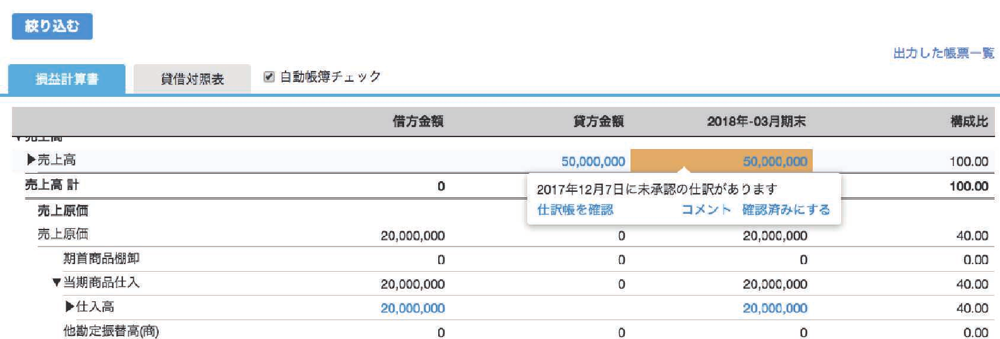
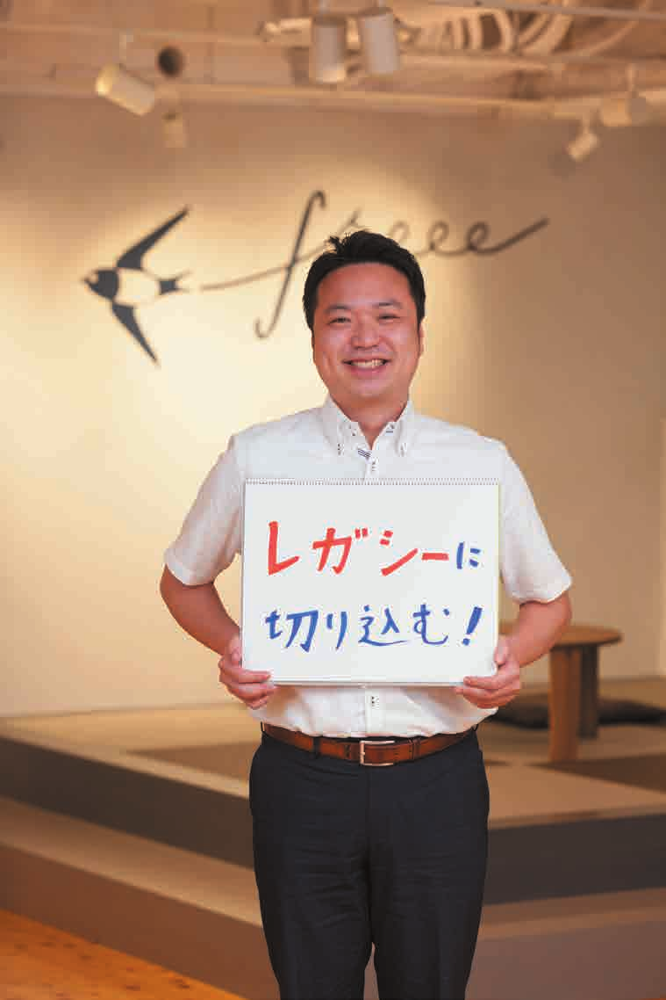

| B07G5GTWVH EBOK | |
| Unknown | |

2018.8
Vol.9
ビジネスのルールが変わる！
クラウド
完結型社会
巻頭インタビュー
「クラウドでビジネスは大きく変革する」
スモールビジネスにこそ"勝機"あり!
10年後の未来予測
クラウド完結型の「業務フロー」構築の極意
えています。
「経営パートナーVol.9」発刊にあたって
今号では「クラウド」に焦点を当て、未来のビジネスの在り
まさに私たちが今号を皆さまのお手元に届けようと制作に励
方を描いています。「未来」といっても、ほんの少しだけ先の
んでいるころ、西日本では地震や記録的豪雨などの自然災害が
姿です。クラウドの利点は、「いつでも」「どこでも」「どんな
立て続けに発生し、甚大な被害が生じました。被害に遭われた
端末でも」利用できることに加え、もう１つ、さまざまなサー
事務所の皆さまには心よりお見舞い申し上げるとともに、弊社
ビス間で１つの情報を使い回せるということがあります。つま
でご支援できることがあれば、ご一報いただけますと幸いです。
り、データの利活用がしやすいということです。
さて、皆さまは「一般社団法人ベンチャー型事業承継」をご
本記事を通して、クラウドサービスのメリットの振り返りや
存知でしょうか？ 弊社も応援団という形で設立に関わるこの
クラウド完結型社会をご想像いただき、事務所経営レベルアッ
社団法人では、若手後継者が先代の資産を活用しつつ、新たな
プの第一歩になれば幸いです。
領域に挑戦することを支えるプラットフォームを提供していき
ます。
このような事業承継の問題は大廃業時代を迎え、いよいよ
待ったなしになってきました。freee でも「クラウド」を中核
にしながら、今後事業承継への取り組みを強めていきたいと考
執行役員 CPO
INDEX
カスタマーサクセスにこだわるfreee 導入プロジェクトとは？
p.03
特集
クラウド完結型社会
クラウドでビジネスは大きく変革する
STAFF
p.06
スモールビジネスにこそ"勝機"あり!! 10年後の未来予測
カバーイラスト
p.10
Studio-Takeuma
クラウド完結型の「業務フロー」構築の極意
イラスト
大久保ナオ登
STEP1 完成形をイメージしておこう！
p.16
根津あやぼ
STEP 2 キーとなるテクノロジーを理解しよう
p.19
高田ゲンキ
STEP3 フィット＆ギャップ分析で強い組織に変えていこう
p.24
撮影
小堺正紀
会計事務所にオススメ！ クラウドサービス 6 選
p.29
渡邊篤志
デザイン
freee 活用講座 第 5 回
ドットスタジオ
AI活用で会計事務所の月次監査業務を正確かつ効率的に！
p.36
編集・構成
会計 freee 乗り換え講座
藤村美穂
p.42
大川朋子
田中 潤
マンガ freee のいちばん優しい手引書：サポにゃんと一緒
「登録したデータをまとめて変更しよう！の巻」
p.46
ライティング
藤村美穂
山崎潤子
野村佳代（アスラン）
▶抽選でオリジナルグッズが当たるアンケートはがきを同封
松岡芙佐江
2｜ 経営パートナー ｜ Vol.9
？
このたび、会計事務所向けにfreee導入を支援するプロジェクトの実施件数が累計1,000件を突破しました。この機会に、
営業でもサポートでもない、皆さまの成功にコミットするカスタマーサクセスチームを改めてご紹介させていただきます。
最注力領域として
freee導入支援プロジェクトとは？
徹底したリソース投下をしています
通常、会計ソフトの導入は所長などの意思決定者が決め
弊社ではこれまで以上にカスタマーサクセスに注力しま
ますが、実際に使用するのは税務担当者や記帳担当者など
す。CSM の人数を、開始当初の4人から20名まで増員し
現場の方々です。現場の皆さまは通常業務で多忙なことも
ましたが、今後も人員を増やしていく予定です。
あり、カスタマーサポートによる操作方法などのフォロー
だけではなかなか導入が進まないという課題がありました。
約1年で5倍に増強！
そこで弊社では1年ほど前から、従来のカスタマーサ
20人
ポートに加えて、カスタマーサクセスという部門を設置し
ました。カスタマーサクセスとは、皆さまの情報を収集・
分析し、主体的に皆さまの成功に貢献し、満足度を高める
ための部門です。受け身で顧客対応をするカスタマーサ
ポートとは対照的な存在となります。
4人
担当するカスタマーサクセスマネージャー（CSM）の
役割は事務所内の合意形成を円滑に進めることです。所内
'17/3
'18/5
のステークホルダーと密にコミュニケーションを取り、導
入の目的を共有し、モチベーションを高め、少しでも効果
また、事務所・顧問先の基幹システム・業務オペレーショ
やメリットを実感できるよう働きかけます。具体的には導
ンを変えるという重大な意思決定に応えるべく、人の質に
入を進めるためのプロジェクトを組成し、チームビルディ
もこだわっています。CSM に求められる人を導くソフト
ングやマイルストーン（KPI）の設定、さらには細かいア
スキルと、プロダクトや業務理解などのハードスキルを併
クションアイテムへの落とし込みとプロセス管理まで行い
せ持つ公認会計士や事業会社の経理経験者、元会計事務所
ます。そして、個人の働き方、組織のあり方の変革に寄与
出身者、大手コンサルティング会社出身者など優秀な人材
します。
を配置しています。
実際に導入した会計事務所のなかには、下記のような成
常により良いサクセスのあり方を目指して
功事例が続出しています。
改善していきます
顧問先100社がクラウド化し、8割の社員がその
今後の目標は、あと2年で導入件数をさらに1,000件増
効果を実感！
やすことで、合計2,000件の事務所と一緒になって理想と
新卒社員が年商30億円の企業への導入に成功。
する会社のビジョンやビジネスモデル、働き方などを再設
計していきたいと考えています。最前線で得た知見をプロ
時短勤務でも他の社員と変わらずに活躍できるよ
うになった。
ダクトや事業開発に活かし、API や RPA などのテクノロ
ジーを活用しながら、freee は会計事務所の成長に大きな
影響をもたらす存在を目指します。
導入プロジェクトの詳細､お申し込み方法は営業担当にお問い合わせください｡
経営パートナー ｜ Vol.9 ｜3
スモール
ビジネスを、
世界の主役に。
誰、
強
育
変
！
完結型社会
あらゆる業務がクラウド上で完結するのを目指す「クラウド完結型社会」は、
freee が創業当初から追い求めてきた理想的なビジネス環境。
それは社会全体がクラウドでつながり、
すべての情報をスムーズにやり取りできる社会。
日本の電子化への取り組みは、諸外国に比べて決して早いとは言えませんが、
政府も日本の IT 利活用を世界最高水準にするべく
ビッグデータの活用やオープンイノベーションの推進に一生懸命です。
そう遠くない将来、クラウド完結化によって世の中はどう変わっているのか？
「クラウド完結型社会」に向けた会計業界の期待役割に迫ります。
4｜ 経営パートナー ｜ Vol.9

大
変革
今や官民一体となって進められている日本のクラウド化。
freee が創業当初から追い求めてきた
「クラウド完結型社会」の構想がようやく実現できる基盤が
整ってきたと言えます。そこでこの機会に、freee では
これまでのミッションをバージョンアップ。
freee が目指す社会への想いと夢を
freee の佐々木が語ります。
、輝
社会
私たち freee は、創業時から「スモー
フォーム」。
の中全体にとって非常に大切なことだと
ルビジネスに携わるすべての人が創造的
私たちが一貫してスモールビジネスに
思います。
な活動にフォーカスできるよう」という
こだわるのは、スモールビジネスこそが
日本では世界に比べて、とくにオンラ
ミッションを掲げて、生産性の向上や業
イノベーションの源であり、世の中の活
インソフト開発といった領域のスモール
務の効率化への取り組みをしてきました。
性剤であるからです。たとえば、世界的
ビジネスの立ち上がりが遅れてきたとい
この慣れ親しんだミッションを今回リ
大企業である Google は新規事業をたく
う経緯があります。その足枷の１つと
ニューアルすることにしたのは、社会の
さんやっていますが、そのほとんどはも
なったのが、大企業中心の構造からなか
インフラがある程度整ってきたことと、
ともとスモールビジネスが立ち上げたも
なか抜け出せなかったことでしょう。
弊社のユーザー数も増え、日本の国家予
のです。Android にしても YouTube に
だからこそ、これからの時代を作り上
算に匹敵するほどの金額が freee に登録
しても Google マップにしても、もとも
げていくうえでは、小さなビジネスがど
されるようになり、我々が創業時から目
とは小さな会社が興したイノベーション
んどん挑戦できる環境作りが必要です。
指してきた「ビジネスを強くできる仕組
を Google が買収しただけなのです。
私たちは freee がその一端を担えると考
み」が、単なる夢物語ではなく現実に実
「イノベーション・ジレンマ」という言
えています。
現可能なことになったと感じたからです。
葉がありますが、まさに巨大企業からは
クラウドのよいところは、いろんな
新ミッションは「スモールビジネスを、
イノベーションは生まれにくい。イノ
データがつながって、リアルタイムで可
世界の主役に。――アイデアやパッショ
ベーションは小さなビジネスから生まれ
視化しやすいことです。これって本当に
ンやスキルがあれば誰でも、ビジネスを
るのです。日本のスモールビジネスが
いろんな問題を解決してくれるんですよ。
強くスマートに育てられるプラット
もっともっと強くなっていくことは、世
たとえば、すべての会計データが同じ
6｜ 経営パートナー ｜ Vol.9
クラウドのプラットフォーム上にあれば、
簡単な資金繰りの問題も、会社同士でお
こなう決済の手間も、企業内のいろんな
業務管理の煩雑さも、すべて解消できま
す。そういうネットワークが構築されれ
ば、お金の動きも最適化・効率化されて
いきますから、お金自体のポテンシャル
も上がっていくでしょう。今よりもっと
ビジネスがしやすい環境になり、ビジネ
スの可能性も飛躍的に向上します。
freee では、その社会構造を「クラウ
ド完結型社会」と呼んでいます。クラウ
ド完結型社会は、アイデアや技術、そし
てビジネスにかける想いがあれば、誰も
が簡単にビジネスを始められる、そして
成長させられる社会。そんな社会のため
のプラットフォームを作ることが、私た
ちの使命なのです。

クラウド化が進めば進むほど、スモール
AI
ビジネスが輝く社会になっていく。それ
は間違いありませんね。
会計業界
変
これからの会計業界の役割は？
freeeの佐々木と武地が、クラウドやAIによって世の中や会計業界が
武地：クラウドや AI で業務の効率化が
どう変わっていくのかを語り合いました。
図れるということは、自身の専門分野や
能力という付加価値で勝負しなければな
らないということでもありますよね。と
度なサービスを提供しようとすると、表
なれば、会計業界はこれまで以上に顧問
スモールビジネスが有利な時代
に会計士さんや税理士さんがいて、裏で
先の収益が上がるソリューションを提供
武地：クラウド化によってスモールビジ
は工場のように膨大な業務をこなす人た
するという意識を持たなければならない
ネスの価値が上がると、規模の経済が逆
ちが必要でした。相続や M&A に特化し
と思います。一緒にビジネスをやってい
転していくような側面がありますね。
た事務所をやりたいと思っても、やはり
てよかったと思っていただけるよう顧問
佐々木：これまでテレビや新聞に広告を
業界で大規模と言われる規模でないと、
先を導いていくことが、これからの会計
出すことは、資本力のある大企業にしか
食べていくことはできなかった。でも、
業界のあり方かもしれません。
できませんでした。今はインターネット
今は裏側の業務のかなりの部分を、クラ
佐々木：まさに本誌のタイトルでもある
広告の登場によって、クレジットカード
ウドや AI で処理できるようになってい
「経営パートナー」ということですね。
とほんの少しのお金があれば、誰でも世
ます。数十人を抱える事務所でないとで
武地：自動化が進めば、これまで10時
界中に広告を出せる時代です。ソフト
きなかったことが、個人事務所でもやり
間かかっていた仕事が９時間、８時間、
ウェア業界も同様で、これまで何億円も
やすくなっている。会計業界だけ見ても、
７時間......と減らせます。そうすれば顧
かかっていた統合的な ERP ソフトと同
スモールビジネスのままで強くなってい
問先に向き合う時間を増やせます。結果、
じことが、クラウドや API によって安
ける世の中が到来したなと感じます。
顧問先にも喜ばれるし、自分の専門分野
価で実現でき、中小企業でも圧倒的な業
佐々木：むしろ、小さいこと自体が強み
も伸ばせるんですよね。未来って、そう
務効率化を図れるようになっています。
であると考えるべきかもしれません。会
いう変化の延長線上にあるような気がし
テクノロジーの進化で、大企業と中小企
社の規模が大きいほど、小さなイノベー
ます。クラウド完結型社会を迎えると、
業が持っている資本力の差がどんどん縮
ションやオポチュニティではたいした意
それがクラウドツールだと意識すらしな
まっているんです。
味がないと考えがちです。しかし、ス
いような時代になっているかもしれない。
武地：会計業界でも、以前は顧問先に高
モールビジネスでは、小さな変化でも重
佐々木：変化のスピードがどんどん早く
要な改革になったり、大きなインパクト
なっていますからね。パソコンの保有率
になったりする。それを突き詰めていく
が25％を達成するまでには23年もかか
ことが、世の中を変えるような商品や
りましたが、スマホはわずか３年です。
サービス――つまり、新しいイノベー
テクノロジーやツールがどんどん変わっ
ションへとつながるんだと思うんです。
ていきますから、仕事内容もどんどん変
スモールビジネスだからこそ、
イノベーションを起こせる。
freee 株式会社 創業者・代表取締役 CEO
佐々木大輔
Daisuke Sasaki
一橋大学商学部卒業。博報堂でマーケティング戦略の立案に従事。
その後、投資アナリストを経て、株式会社 ALBERT の執行役員に
就任。08年 Google に参画、アジアでの Google のビジネスおよ
び組織の拡大を推進した。12年 freee 株式会社を創業。
化していきますよね。会計業界に求めら
存在です。それは今後も変わりませんか
動力があれば、誰でも簡単によいビジネ
れる役割も、変わっていくだろうと思い
ら、「この人たちはさらなる価値をもた
スを作って育てられるプラットフォーム
ます。
らしてくれるんだ」という世の中の信頼
なんです。
を勝ち取ることが、おそらくすごく重要
武地：ポジティブに言い換えれば、アイ
唯一、社長室に入れる業界
なんじゃないかなと思うんです。
デアやパッションを持っていれば、幸せ
武地：一方で、クラウドや AI が進化す
佐々木：先ほど武地さんの言った付加価
に生きられる可能性が高まっているとい
ればするほど、自分たちの仕事が奪われ
値ですね。今までと同じことしかしない
うことですよね。「こんなによい時代に
るのではないかと危惧する声が会計業界
なら、報酬はどんどん下がってしまう。
生まれて、なんて幸せだろう」と考えら
にはありますね。
だから自分の強みは何か、どうやって経
れる人が増えてほしいし、そういう人こ
佐々木：たしかに、現場レベルの判断は
営者に価値を届けるかということを真剣
そが本当の意味で成功するんじゃないか
ある程度置き換わっていくでしょうね。
に考える必要があるということですね。
なと思います。
武地：とはいえ、もちろんすべての業務
私だったら、個人事務所でマルチにやる
佐々木：freee が世の中を引っ張って、
が置き換わるわけではないと思うんです。
のは無理なので、自分の強みや専門ジャ
変えていける存在でありたいですよね。
適正な納税のインフラであるという会計
ンルに特化して、好きなことをやる道を
会計業界からもそう期待されていると思
業界の役割はおそらく変わりませんし、
選ぶと思います。
います。本当に。
申告という制度があるかぎり、業界の根
武地：もう１つ、中期的なスパンで考え
クラウド完結型社会はスモールビジネ
本的な価値は「専門家が見てくれている
ると、とくにまだ今後何十年もこの業界
スが輝く社会だと言ったけれど、業務の
のだから安心だ」という信頼の付与にあ
でビジネスをしていかなければいけない
自動化が進むからこそ、次に何をするか
りますからね。信頼性はなかなか機械に
若い方にとっては、数字を見て分析でき
の判断が重要です。それができなければ
は置き換えられません。たとえ95％自
るというのは大前提で、今後は経営者と
ビジネスが弱くなってしまう。アメリカ
動化されても、５％の信頼を誰かが付与
対話して、会社の強みやカルチャーまで
では Amazon が伸びるほど小売業が潰
しないといけない。100％自動化されて、
考慮できるような、コミュニケーション
れていくという現実がありますが、Am-
すべての税務業務がなくなるという未来
型のビジネスの力が求められるようにな
azon に置き換わらないようにビジネス
は、日本の申告納税制度下では、まだ簡
ると感じているんです。
をしている小売業者もたくさん存在して
単には来ないだろうと思います。
佐々木：そうですね。さまざまなデータ
います。大企業に席巻されがちな社会の
佐々木：そこは技術よりも法制度の問題
がクラウドで可視化され、自動化される
なかで、中小企業がちゃんと戦えるよう、
になりますもんね。集計やチェックと
なかで、税理士・会計士さんは、それを
「経営パートナー」であるという共通の
いった業務はいずれなくなるでしょうが、
ベースにビジネスを一緒にやっていける、
意識を持って会計事務所と freee でタッ
解釈の余地がない税制にならないかぎり、
本当の意味での相談相手という役割が求
グを組んで取り組んでいきたいですね。
税理士さん、会計士さんが果たす役割は
められるようになっていくんでしょうね。
依然として大きいと思いますよ。
アイデアやパッションが重要
武地：よく言われるように、税理士・会
計士さんは唯一、社長室に入れて、会社
佐々木：結局、クラウドや AI の進化って、
の財務状況も隅々まで知ることのできる
アイデアやパッションやスキルという原
アイデアやパッションがあれば、
幸せに生きられる社会になる。
パートナー事業本部 専務執行役員 CPO 公認会計士
武地健太
Kenta Takechi
税理士一家に生まれる。あずさ監査法人で公認会計士としての経験を
積み、ボストンコンサルティンググループで戦略コンサルティングに
従事したあと、freee に CFO として参画。現在は「経済活動のログ」
としての会計の可能性をパートナーの皆さまと追求し続けている。

"勝機"!!
10年後 未来予測
「ワンストップ」「ワンスオンリー」「デジタルファースト」。
これは今、政府が主導する改革で盛んに登場する言葉です。
今、世の中はどのような方向に進もうとしているのか。
そしてそれがどうスモールビジネスに関係してくるのか。
それを解明するカギとなるのが、この３つの合言葉。
言葉の意味は本編を読んでいただくとして、
「クラウド完結型社会」に向けた少しだけ先の未来像をお見せします。
「
完結型社会」
STEP 1
STEP 2
STEP 3
webデータに強い
経理だけではない！
あらゆるデータが
クラウドだからこそ
バックオフィス
クラウドでどんどん
できる会計自動化
全体を最適化
つながっていく社会
まずはクラウドの復習から。クラウドとは、
本来、会計は経理だけのものではありませ
会計を軸にしたネットワークは、社内だけ
ソフトをパソコンにインストールしなくて
ん。営業部が作る納品書、資材部から回っ
でなく社外にもあります。企業や個人との
も、ネットにつながっていればどこでも使
てくる請求書、各従業員が使った経費など
取引、銀行や行政、会計事務所とのやり取
えるソフトのことです。一番のメリットは、
も会計の一部です。クラウド会計ソフトは、
り、あるいは社内ではあるけれど、あちこ
インストール型ソフトに比べて、web デー
アカウントを付与すれば誰でも自分のパソ
ちに分散している支店のデータの取りまと
タの扱いに圧倒的に強いこと。クラウド会
コンからログインできるので、経費を使っ
め。クラウドなら、これらの情報をいちい
計ソフトなら、インターネットバンキング
た本人が入力するというような最適化が可
ち紙でやり取りしたり、ローカルのデータ
やクレジットカード、電子マネー、通販履
能。そこで freee は次のように考えました。
ベースから取り出したりしなくても、素早
歴などの web で取得できるデータを自動
会計ソフトは会計だけではなく、バックオ
く、簡単にアクセスでき、利活用が非常に
でソフトに取り込めます。領収書をスキャ
フィス全体の最適化にもつながると。いわ
しやすいのです。大企業にも中小企業にも、
ンして取り込むのもお手のもの。手入力を
ば、入力データが自動的に会計情報に変換
政府にも個人にもクラウドの橋がどんどん
極力減らし、会計を自動化したい――これ
される社内ネットワークです。バックオ
かかって、欲しいデータに瞬時にアクセス
こそ freee がクラウドソフトとして開発さ
フィスがスリムになるうえ、リアルタイム
できる――それが freee の思い描く「クラ
れた最初の理由です。
で経営状況を確認できるようになります。
ウド完結型社会」です。
10｜ 経営パートナー ｜ Vol.9
freee が CFO の役割を果たすだけでな
な社会は、社会そのものが活性化する。
ウチの会社のCFOは
雲（クラウド）の上!?
く、freee を活用することで、これまで
スモールビジネスは、社会にとっても非
お願いしていた税理士・会計士さんが
常に大事な存在なのです。
じつは freee という会社は、創業時は
CFO 的な役割を果たすこともあれば、
伝統工芸を守る職人さんにしろ、地域
CFO 株式会社という名前でした。CFO
会社で経理を一手に握る人が CFO に
の人たちから愛される食堂にしろ、癒し
とは「最高財務責任者」（chief financial
なっていくこともあるでしょう。
を提供してくれるマッサージ屋さんにし
officer）を表しますが、freee の前身で
「お金がかかる」とか「人がいない」と
ろ、みんなが何かに情熱を持ち、スキル
ある CFO 株式会社は、Cloud Financial
いう理由で手が届かなかったユーザー層
を高めることに熱心です。その反面、ス
Officer の略です。つまり、CFO（最高
にも、サービスを行き渡らせることがで
モールビジネスを経営している方々は、
財務責任者）の機能をクラウドソフト
きる――それがクラウドサービスを提供
必ずしも「経営者」ではないかもしれま
ウェアやデータでカバーしようという発
する最大の醍醐味だと思います。
せん。経営より何より、自分がやりたい
想から生まれた会社だったんです。
パッションとスキルが
ことのほうが優先されるからです。
CFO は日本ではまだあまり馴染みが
スモールビジネスの強み
でも、それこそがスモールビジネスの
ありませんが、財務戦略の立案・執行を
「強み」でしょう。「オレはこの工芸品を
おこなう責任者として、欧米では経営に
ところで、みなさんはスモールビジネ
極めるんだ！」というのがスモールビジ
欠かせない重要なポジションと位置付け
スの「強み」とは、何だと思いますか？
ネスの出発点なら、経営を含むそれ以外
られています。日本だと、「財務部長」
じつは、freeeの代表、佐々木もスモー
の業務は、「やらざるを得ない」からや
だとか、社長を補佐する「番頭さん」の
ルビジネスを営む家庭に生まれました。
るだけの"付帯的"な業務にすぎませ
ような人を思い浮かべるかもしれません。
彼の実家は祖父の代から美容院を経営し
ん。だったら、それをもっと簡単にでき
でも、CFO は単に財務のエキスパート
ており、祖父はいろんな工夫をしながら
ないか。それができれば、その人にとっ
であればよいというわけではありません。
経営に当たっていたそうです。
て一番創造的な活動にフォーカスできる
「営業」「管理」「システム」などさまざ
実家を含むさまざまなベンチャー企業
ようになるはずです。
まな知見を持ち、財務戦略を経営戦略へ
を見てきた佐々木が思うのは、スモール
今はそれをテクノロジーが実現してく
と発展させて、企業経営の根幹を担う存
ビジネスは「情熱」と「スキル」ありき
れます。自分１人で納得のいくものを生
在。欧米ではその地位は、CEO（最高
だということです。面白いと思うこと、
み出したいなら、その環境作りをソフト
経営責任者）と同様に確立されています。
パッションを注ぎ込めること、自分のス
ウェアが手伝ってくれます。反対に、人
「テクノロジーを使って、こうした
キルで人に喜んでもらうこと。スモール
を雇ってビジネスをスケールさせたいな
CFO の役割を中小企業にも行き渡らせ
ビジネスには、それをビジネスにしてし
ら、それもソフトウェアが助けてくれる。
たい」というのが、freee という会計ソ
まった人が多いのではないでしょうか。
それは、スモールビジネスが大企業並
フトが生まれた最初のきっかけでした。
だからこそ、スモールビジネスが元気
みに活躍できる社会を作ることにつなが
たとえばこれまで一般庶民は、お金持
ちの人たちがやるように、自分の資産管
理のためにプライベートバンカーを雇う
なんていうことはできませんでした。と
ころが最近は、AI を利用して、アルゴ
リズムによる資産運用のアドバイスをし
てくれるロボアドバイザーやアプリが登
場し、まだお金のない若者や中流層でも
手軽に投資のアドバイスが受けられるの
です。それは、プライベートバンカーに
お願いするのと同じ環境が、ネット上で
なら断然手軽に手に入るということです。
同じように、これまで多国籍企業や大
企業にしかなかった CFO という機能も、
ネットを介せば、スモールビジネスや中
小企業でも手軽に得ることができます。
経営パートナー ｜ Vol.9 ｜11
り、引いては元気な世の中、活気のある
スキルがあれば、誰でもビジネスを作れ
が集まる「新経済連盟」といった団体を
社会を作ることにつながっていきます。
る環境になっていくからです。それこそ
通して、社会インフラを整えるための提
そしてこれからは、「このアイデアを
が、freeeが本当に作りたい社会の姿です。
言などを政府に対しておこなっています。
実現できたら面白そうだけど、お金がな
日本の電子政府化への取り組み
いからムリ」とあきらめていたようなこ
とを、より簡単にビジネスにできる社会
日本でも電子政府への取り組みは
が訪れるはずです。クラウドのおかげで
2000年から始まりました。しかし、そ
障壁が下がり、アイデアやパッション、
れは縦割り行政の弊害で、あまりうまく
いきませんでした。当時はひたすら電子
申請化を進めたのですが、電子化する申
請「数」をゴールに据えたため、便利か
どうかは関係なく、各省庁でバラバラの
電子申請ができあがってしまったのです。
すると、こちらの申請とあちらの申請で
情報が７割も重複している......という事
態が起こります。これでは二度手間にな
りますから、決して使いやすいサービス
課題
化推進
ではありません。
それを受けて次第に浸透していったの
社会的
整備
が、「ワンストップ」「ワンスオンリー」
という考え方です。手続きが１カ所で済
とはいえ、freee がそのためのプラッ
でも、freee の努力で何とかなるのは
み、一度提出した情報は再提出が不要と
トフォームとして機能するには、freee
「ちくわ」の部分だけなのです。
「ちくわ」
いうことです。今はマイナンバー制度に
単体ではままなりません。まず、freee
の「穴」を通じてデータを出入りさせる
よって、政府が運営する「マイナポータ
がいろんなデータとつながれるように、
のは、そのデータを持っている人たちに
ル」というオンラインサービスがありま
すべてのデータがクラウド上で管理され
よるからです。
すが、それがまさにワンストップ・ワン
ているのが理想です。本来 freee は、単
取引先が請求書を紙で送ってきたら、
スオンリーを目指すもの。たとえば引っ
体の会計ソフトとしてではなく、ネット
スキャンが必要です。行政手続きが電子
越しのとき、転出・転入届はもちろん、
バンキングやクレジットカードなど、さ
化していなければ、そのための作業が発
電気・ガスの住所変更、年金・健康保険
まざまなデータとの"つながり"をも
生します。銀行がネットバンキングに対
の住所変更、自動車の登録変更がオンラ
含めたサービスなのです。それがローカ
応していなければ、通帳を１行ずつ手入
ルで使うソフトとの最大の違いです。
力するしかありません。関連するソフト
すべてのデータがクラウド上にあれば、
ウェアと freee が連携していなかったら、
取り込みやすく、処理・加工がしやすく
freee にデータを取り込むためにデータ
なります。クラウドソフトは、「関係す
を CSV 形式でダウンロードし、加工し
るデータがクラウド上で管理されてい
てからアップロードする必要があります。
る」という社会のあり方が構築されては
最悪、その処理がうまくいかず、同じ情
じめて、最大の効果が発揮できるのです。
報を手入力することになったり......。
私たちがよく言うのは「ちくわ」の例
つまり、データのやり取りは freee だ
です。あるデータをちくわの輪の中に通
けで完結するわけではないということで
すと、別の情報へと変換されて出てくる。
す。政府・企業のシステムや商習慣も含
そのデータは自社の経営を把握するため
め、社会的なインフラや制度があってこ
にも使われれば、国への報告、投資家へ
そ、クラウドの利点が活かされる。
の報告にも使われ、さまざまなアウト
そのために freee では、クラウドサー
プットになります。freee はこのちくわ
ビ ス を 提 供 す る 会 社 が 主 と な っ た
の役割を担いたいと考えています。
「Fintech 協会」やインターネット企業
12｜ 経営パートナー ｜ Vol.9
Column
一企業が国民の行動を支配する!?
アリペイのデータ集約戦略
（右上）北京一の繁華街・王府井。（右下）地下鉄内でスマートフォンをチェックする人々。（左）スマートフォンを利用してアリペイで決済。
1999年に中国で生まれ、すさまじい
コアサービス「芝麻信用」（セサミ・ク
わるなどのメリットを享受できます。ス
勢いで急成長している「アリババ」。今
レジット、アリババの子会社アントフィ
コアが低いと交通機関の利用が制限され
や中国のネット通販最大手として君臨し、
ナンシャルが運営）です。アリペイでの
るなどのデメリットがあり、就職や結婚
ユーザー数は約5.2億人とも言われてい
支払い履歴のほか、職歴、住宅・自動車
にも影響するとの危惧もあるほどです。
ます（2017年6月時点）。
の保有状況、SNS 上の交友関係、中国
実際に中国では、毎月更新される信用
アリババの提供する電子決済サービス
政府が公開する個人の学歴情報・公共料
スコアを上げるために、公共料金をきち
「アリペイ」は、EC サイトでの購入の
金の支払い記録などをもとに、AI が
んと支払う、信用力の高い友人と交流す
ほか、提供するアプリを通じてタク
350 ～ 950点のスコアを自動算出しま
るなど、品行方正なふるまいを心がける
シー・ホテルの予約、チケット購入、公
す。ユーザーがアプリ経由で個人情報を
人までいるくらいです。一企業が個人の
共料金支払いなどにも対応。今や露店の
提供すればするほど、スコアがアップす
行動を左右するほどの影響力を持ってい
店先にも決済用の QR コードが張られて
るとも言われています。
ることには賛否両論がありますが、アリ
おり、中国国民には必須のアプリとなっ
このスコアが高いと、シェアサービ
ババは2036年には20億人にサービスを
ています。
ス・宿泊サービス・病院での診察などの
提供すると謳っています。「データ」を
アリババのサービスで今もっとも注目
デポジットの免除、出国手続きの簡素化、
いかに集めるか。それが企業の強さを表
されるのが、2015年に始まった信用ス
アリペイ経由なら瞬時にローン審査が終
す社会になっているのです。
経営パートナー ｜ Vol.9 ｜13
日本化流
イン上で一括しておこなえるようになる
のです。
2000
これは個人が受けられるサービスです
が、私たちがずっと意見を提出している
韓国やシンガポールに比べて IT 促
IT基本法
のは、法人手続きに関してもワンストッ
進が遅れていた日本が、世界最先
プ・ワンスオンリーを実現してほしいと
端の IT 国家になるべく立法された。
通信ネットワークの整備や電子商取
いうこと。そのボトルネックになってい
引の促進、電子政府の推進などが掲
るのは、やはり縦割り行政と、データ開
げられ、行政手続きの電子化は進ん
だが、縦割り行政の弊害でさまざま
放に積極的ではない慣習的な企業意識で
な電子申請がバラバラに乱立すると
しょう。さらには、改革を進めるうちに
いう残念な結果に。
抵抗勢力がいろいろ登場し、中身のない
改革になりがちだという側面もあります。
日本の電子政府の取り組みも、2000
2013
年からは大きな飛躍を遂げました。今で
は国としても、データは保護するだけで
なく、積極的に活用していこうという方
国民１人１人に番号を振り、社会保
法
障や納税に関する情報を一元的に管
向に向かっています。
理するための法律。年金や納税など
たとえば、銀行口座の情報は銀行が持
異なる分野の個人情報を照合できる
ようにし、行政の効率化、公正な給
つデータですが、ユーザーの行動履歴・
付と負担、手続きの簡素化などを
資産でもあります。ユーザーがデータを
図った。このころからワンスオン
リー（＊1）やデジタルファースト
よりよく活用するために、その情報を別
（＊2）という概念が登場。
のサービスで利用したいと思えば、当然
の権利としてそれを可能にするべきで
しょう。私たちは国民の権利として、そ
2016
の意識を一般的なものにしていくことが
大事だと考えているのです。
官民活用
もちろん、国としてどういう方針が一
官民の持つデータを活用しやすく
し、自立的で個性豊かな地域社会の
推進基本法
番よいかは、産業政策にも関係するため、
形成、新事業の創出、国際競争力の
なかなか答えの出ない問題です。でも、
強化などが目指された。データを容
日本企業と個人にとって、一番使い勝手
易に利用するための「オープンデー
タ」推進が法律として位置付けら
がよいのはどういう方法なのか。それを
れ、個人情報を保護するばかりでな
考えれば、やはりデータを活用できる環
く利活用もしようという視点が盛り
込まれている。
境を整えることが急務でしょう。
今や、世界全体がそうした方向に向
かっていますが、日本はまだ遅れている
2017
部類なのです。ですから日本でも、10
年後にはワンストップ、ワンスオンリー、
デジタルファーストが当たり前になって
改正銀行法
いるかもしれません。それは私たちの働
利用者保護を確保しつつ、金融機関
とフィンテック企業のオープン・イ
き方、企業のあり方を変えていくものに
ノベーションを進展させるため、銀
なるはずです。
行には API 公開の努力義務を課す
一方、銀行システムに接続する企業
には登録制を導入。それら企業は
木村康宏
「電子決済等代行業者」と新たに定
東京大学法学部卒業。野村総合研究所を経て
義された。もちろん freee もそれに
freee に参画。現在は、電子行政や金融イン
含まれる。
フラを始めとする社会のテクノロジー活用基
盤形成に向けて、情報発信・提言活動に取り
組む。
（＊1）ワンスオンリー......一度提出した情報は二度提出しなくてもよいという仕組み。
14｜ 経営パートナー ｜ Vol.9 （＊2）デジタルファースト......電子申請と紙の並存ではなく、電子申請を原則とすること。
Column
日本はエストニアに続けるか？
電子政府化が見せる未来像
（右）国旗の青は空・川・湖・海、黒は大地、白は雪を表している。（左上）首都タリンを望む。（左下）e-ID カードさえあれば、生活がほぼ成り立つ。
電子政府の最先端として世界中の注目
行されます。保険証、免許証、EU 圏内
日本のマイナンバーは他人に秘密にす
を集めるエストニア。北欧に位置し、面
ならパスポート代わりになります。さら
るべき ID として配布され、生活が政府
積は4.5万㎢と日本の約9分の1、人口約
に選挙や法人登記、電子署名、交通機関
に監視されることが危惧されています。
132万人の小国です（2017年1月時点）。
の運賃支払いにも使え、これさえ持って
また、縦割り行政をしてきた日本では
この国が電子政府化を進めた要因は2つ。
いれば生活が成り立つという徹底ぶり。
「ワンストップ・ワンスオンリー」原則
1つは、1,500以上の島があり人口密度
電子政府化の恩恵は外国人にも及んで
を掲げながらも、なかなか連携されてい
が低い国土のなかでも、公的機関や民間
います。「e-Residency（電子居住）」＝
ないのが現状です。対してエストニアで
事業のサービスを全国民に届けるための
外国人がエストニアの電子住民となる制
はアクセスログの記録を徹底し、不審な
策として。もう1つはロシアからの侵略
度により、国外から企業の設立・運営、
アクセスがあれば政府に調査を依頼でき
対策です。エストニアは1991年にソ連
納税手続きなどを直接おこなうことがで
ます。さらに「X-Road」というプラッ
から独立しましたが、今もロシアを警戒
きます。2016年10月時点で、現地法人
トフォームを介して、官民合わせて
しています。しかし、たとえ領土が占領
化された日系企業が約50社存在します。
1,400以上ものサービスが提供されてい
されても国家のデータとサービスを世界
日本における電子政府化の取り組みの
ます。
中のサーバに分散しておけば国家自体が
1つ、マイナンバー制度の導入は2016年
今やエストニアで電子化されていない
占領されることはないと考えたのです。
でした。しかし、さほど浸透していない
情報は、「結婚、離婚、不動産売却」の
エストニアで使われているデジタル
のは個人情報流出の恐れと情報連携の甘
3つのみ。日本の電子政府化はいつエス
ID カードは、15歳以上の国民全員に発
さが原因です。
トニア並みになるのでしょうか。
経営パートナー ｜ Vol.9 ｜15


完結型「業務
」
構築 極意
ここまで読んできて、freeeの目指す
STEP1
「クラウド完結型社会」が決して夢物語ではないということが
おわかりいただけたのではないでしょうか。
となると、次の課題はどうやってその流れに
乗り遅れないようにするか。
ここではもっともっとクラウドを理解して、
完成形
うまく導入できるステップをご紹介します。
！
クラウド完結型社会になったあとの自社の業務フローはどうなっているでしょうか。
社内のありとあらゆる業務がクラウドサービスを使って連携し合い、
効率的に最大限の価値を出せる強い組織になっていることでしょう。
購買・製造・出荷
・
人事・労務管理
全般管理
上図は、会社全体のバリューチェーン
ます。たとえば、机の引き出しの中に
加えて、一方通行な情報伝達から情報
が各クラウドサービスで実行され、かつ、
眠っている新規顧客開拓セミナーで取得
の相互連携に変わることで、たとえば経
各クラウドサービスが API・RPA によっ
した名刺をきちんと顧客管理システム
理部の債権残高や回収状況の管理情報が、
てつながった結果、業務全体が有機的一
（CRM）に入れておけば、社名、部署名、
わざわざ未回収リストを作ることなくリ
体となって機能するエコシステムのイ
住所などの情報をマーケティングやセー
アルタイムで営業にも共有され、営業の
メージ。ポイントは２つ、すべての業務
ルス資料や、基本契約書にも情報を反映
自発的催促により回収漏れや貸し倒れが
がクラウド化され、かつ、相互に連携し
させることができるでしょう。契約時に
減らせるかもしれません。
ていること。
決めた決済条件や振込先が登録され、請
つまり、会社の中を流れる情報がワン
freee を使っている皆さまなら、会計
求書に自動で反映されれば、いちいち契
ストップ、ワンスオンリーになる。そう
業務の二重三重の重複業務はだいふ解消
約書を確認する手間もなくなるし、間
なれば、もちろん生産性も上がるし、社
したでしょう。ですが、会社の中で起き
違った振込先に支払ってしまうようなミ
内のコミュニケーションがスムーズにな
ている無駄はそれ以外にもいっぱいあり
スもなくなります。
り、スピーディに問題を解決できるよう
16｜ 経営パートナー ｜ Vol.9

ペーパレス化は身近なところから！
モバイル Suica 活用術
になります。社内で情報が滞留すること
freee でモバイル Suica と同期すると、交通機関を使った移動が自動で
なく最新の状態に更新され続けるので、
明細化されます。クラウドの便利さをこれで体感してみてください。
社会の急速な変化に後れを取ることなく
基 本
使
方
適切な意思決定ができるでしょう。また、
「バリューチェーンのどこで問題が起き
①freeeに口座として登録する
［口座］→［口座を登録］を選び、
「モバイル
ているのか」「どこが自社の強みなのか」
Suica」を検索。自分のログイン情報を入力し、同
期ボタンをクリックすると、ホーム画面の口座一覧にモバイル Suica の口座が追加されます。
がはっきりと見えてくるので、改善によ
②利用明細を取り込む
る体質強化も、選択と集中による競争力
口座の一覧からモバイル Suica を選びます。しばらく待つと［画像認証してください］とい
強化も、スムーズに進めることができま
う表示に切り替わるので、すぐにクリック。60秒以内に表示された文字列を入力すると自動
す。
的に同期が始まります。取り込まれたデータはクリックしていくだけで簡単に登録できます。
これからの企業は、こうしたエコシス
テムをいかに作り上げるかを念頭に置い
て運営していく必要があるのです。
まずは社内のペーパレス化
では、会社をエコシステム化するには
どうしたらよいのでしょうか。
まずは、社内でどこにデータの"詰ま
り"があるかを把握します。紙や Excel、
手作業でやっている業務はどこにあるか。
交通費精算や請求書発行など、たくさん
あると思います。それらをペーパレスに
ヒント！ 画像認証前は同期ができません。「同期失敗」と表示されても慌てないで。
できないか考えてみましょう。必要な人
が必要なデータにアクセスでき、いちい
応 用 編
ち紙の書類や添付ファイルでやり取りを
しなくても情報共有できる仕組みです。
［自動登録ルールの設定］でさらなる自動化を
クラウドの導入はペーパレスを進める
そのまま使うだけでも AI が勘定科目を推測してくれるので十分便利。でも、もっと自動化し
たかったら［自動登録ルールの設定］をするのがオススメ。「こういう内容の明細はこう登録
基本的な方策ですが、じつはただ既存シ
する」というルールをあらかじめ設けておけば、クリックの手間すら省けます。
ステムをクラウドに置き換えるだけでは
【設定方法】
不十分。大切なのは、クラウドの恩恵を
［設定］→［自動登録ルールの設定］を選択したら、画面上部の［新規作成］ボタンをクリック。
最大限まで引き出しているかどうかです。
必要事項を入力して［作成する］ボタンを押せば完了。交通費として登録する場合、画面のよ
たとえば、会計ソフトをクラウド化し
うなルールが考えられます。
たとしても、交通費精算のやり方がこれ
収支区分：支出
までと同じであれば、結局、手入力での
取引口座：モバイルSuica
取引内容：部分一致「電車」
作業が必要になります。それではせっか
金額：（上限）1,000円
くのクラウドのよさが十分に活かされて
この条件に一致したとき：
取引を登録する
いません。クラウドの恩恵を最大限に享
勘定科目：旅費交通費
税区分：課対仕入
受するには、これまでと業務のやり方を
品目：「電車代」
少し変える必要があるのです。
例としてモバイル Suica を挙げてみ
ましょう。モバイル Suica とは、ユー
ザーの携帯情報端末を Suica として使
ヒント！ モバイル Suica での物販購入も［自動登録ルールの設定］が便利。経営者で
える JR 東日本のサービスです。電車に
あればすべて「事業主貸」としたり、従業員であればすべて「無視する」など。大事なの
は、イレギュラーなものまですべてを自動化しようとしないこと。社用のモバイル Suica 乗るときはもちろん、電子マネーとして
での物品購入利用は禁止し、間違って使ってしまった場合は別途経費精算を必須にするな
買い物にも使えるすぐれもの。
ど、運用ルールでのカバーと組み合わせて最適な業務フローを設計しましょう。
freee では、このモバイル Suica と同
経営パートナー ｜ Vol.9 ｜17


期して利用履歴を取り込むことができま
きるというわけです。
どのようにデータが流れるのがベスト
す。電車に乗った履歴なら、何日にどの
なのか、それを実現するにはどのように
データの流れをイメージしよう！
駅からどの駅まで乗り、電車代がいくら
システムとシステムを連携させるべきな
だったかまで自動で反映。これまで交通
ポイントは、デジタル化したデータが
のか。企業それぞれでニーズは異なりま
費精算のたびに電車代を調べて手入力し
きちんと組織のなかを流れ、ワンストッ
す。それを１つずつ考えてつなげていけ
ていたのがウソのように効率化します。
プ、ワンスオンリーとなるようにイメー
ば、自社のクラウド化の完成形がかなり
つまり、これまでのやり方から、仕事
ジすること。１つずつの業務を個別にク
具体的にイメージできるはずです。
での移動はすべてモバイル Suica を使
ラウド化しても、これまでとやり方が同
一度でもデータのスムーズな流れを体
い freee で同期するというやり方に変え
じであれば、データが途中で途切れてし
感したら、その利便性を実感することが
れば、クラウドの恩恵を最大限に享受で
まいます。
できるでしょう。
クラウドだからつながる！シームレスな社内業務が実現
2017年に API 連携を果たしたクラウド型の営業支援・顧客管理ソフト「Sales Cloud」（セールスフォース提供）と freee。
まさにクラウド完結型と言えるこの連携で、社内業務はどう変わるのでしょうか。
従来
営業
Excel
Excel
Excel
会計
合計
営業管理 請求 債権管理 入金消込 仕訳入力
92時間
2500min
250min
2500min
250min
freee
営業
合計
営業管理 請求 債権管理 入金消込 仕訳入力
1時間
30min
0min
30min
0min
たとえば月500件の請求がある企業の場合、freee for SFA を導入して SFA ～仕訳まですべてを freee で一気通貫させると90倍の効率化に。
請求や消込だけ部分的にクラウド化しても効果は薄いことがわかります。
一般的に、営業担当が利用する営業支
求業務を処理している企業は68.2％に
ことで、これまで経理担当がおこなって
援（SFA）システムと経理担当が利用す
上りました。こうした複雑・煩雑な業務
いた請求書発行と入金確認作業を営業担
る会計システムのあいだには、請求に関
フローを経なければ会計ソフトのデータ
当が「Sales Cloud」上でおこなえ、経
わる面倒な業務が存在します。SFA で
を SFA に反映できないとなると、正確
理担当との請求・入金にかかるコミュニ
管理した顧客・商談・受注データを会計
かつリアルタイムに売上分析をすること
ケーション・コストが不要になります。
システムに仕訳入力するには、案件受注
はできません。また、未入金は年間平均
また、Sales Cloud 上に入金データが自
後に営業から経理に情報を伝えなくては
33.6件、3,881万円も発生しており、中
動で反映されるため、営業担当はリアル
ならず、また入金漏れなどが発生した場
堅企業の黒字倒産が多いことを見ても、
タイムで正確な売上分析ができます。未
合には、今度は経理から営業へと情報を
キャッシュフローの改善は早急な課題と
入金督促の効率化により売掛金の早期回
渡さなければいけません。ソフト間で分
なっています。
収が実現し、キャッシュフローが改善し
断が起き、二重三重の手間が発生してい
そこで、セールスフォースの SFA ソ
ます。
るわけです。
フト「Sales Cloud」と freee の API 連
freee が2017年2月に50 ～ 500名未満
携アプリが登場。これによって両者で請
詳細 料金
の企業を対象にした調査によると、紙・
求データがシェアでき、営業と会計の溝
確認
。
Excel による作業や請求書発行システム
が埋まります。
⇒https://info.freee.co.jp/sfa など、複数のツールと人力を駆使して請
このアプリ「freee for SFA」を使う
18｜ 経営パートナー ｜ Vol.9


STEP2
理解
効果的にクラウド化を進めたいなら、テクノロジーを知ることも必要。キーとなるのは「API」と「RPA」の2つです。
この2つの本質を理解すれば、「よいサービスがない」と嘆くことなく、実現したいシステム構築が可能となります。
標準的 業務
組 合
API
Application
最近のトレンドワードの１つとも言える「API」。マスコミでもよく見かけるようになりました。
Programming
でも、「イマイチ何のことだかわからない」という人も多いのではないでしょうか。
Interface
ここでは API の仕組みを基礎から解説します。
・
認証
POS
金融機関
EC
業務
決済
共有
取 込
freee を取り巻く API 連携。
能を使えるようにします。
フトウェアの機能を貸し借りするための
ソフトウェアの機能を
貸し借りするドアの「鍵」
以前は、ある企業が開発したシステム
「鍵」の役割を果たすのが API なのです。
はクローズドで管理されてきました。別
たとえば、みなさんもレストランを探
クラウドが普及するにつれて盛んに
の企業がそのシステムを使おうと思って
すとき、「食べログ」や「ぐるなび」と
なっているのが、「API 連携」です。API
も、鍵がかけられた扉みたいなもので、
いったグルメサイトを検索したことがあ
とは、ソフトウェアの機能を共有する仕
外から自由にアクセスすることはできま
ると思います。これらのグルメサイトで
組みのこと。自社のシステムの一部を公
せん。でも API が公開されていれば、
は、お店のページにピンが表示された地
開して（これを「オープン API」と言い
許可を与えられた人は自由に扉を開けて
図が載っていますよね。これは Google
ます）、他社のソフトウェアでもその機
アクセスできます。いわば、企業間でソ
マップの API が公開されているからこ
経営パートナー ｜ Vol.9 ｜19

そできること。業者は Google マップと
freee も各機能を提供しているベン
box に自動的にアップロードしたり、名
いう機能を自分たちのサービスに組み込
ダーと連携することで、より多くのユー
刺管理アプリと Google コンタクトを連
んで、より便利なものにできるのです。
ザーのニーズに応えながら、一層の業務
携してスマホの電話帳として使ったり、
効率化を実現しています。１つ１つの
Google カレンダーの予定を LINE に自
期待される
オープンイノベーション効果
ツールは限定的な機能でも、それをつな
動で流したりと、自分好みにカスタマイ
ぎ合わせることで、より広範なニーズに
ズして作業を自動化することができます。
では、なぜ今オープン API の機運が
応えることができます。それはユーザー
工夫次第では、複数のサービスを組み合
高まっているのでしょうか。企業は莫大
の立場に立った開発が重視される世の中
わせることでより複雑な作業も自動化で
なコストをかけてシステムを作り上げて
になってきているということでもありま
きます。たとえば、時間計測アプリの
いるのに、その API を公開することに
す。
Toggle で記録した作業時間を Google
どんなメリットがあるのでしょう。
この新潮流を広めていくべく、freee
スプレッドシートに自動転記、それを請
まずは、自社のデータやシステム機能
では API を活用した外部サービス連携
求書 API を使って freee の請求書に落
を有償で提供して、新たな収益源にでき
を強化していく「freee オープンプラッ
とし込めば、タイムチャージする請求書
ること。でも、それ以上に大きいのが、
トフォーム」戦略を発表し、連携パート
も簡単に作成できます。
自社のデータやシステムを組み込んだ新
ナーとともに API エコノミー形成を目
両方とも英語のサイトですが、使い方
たな製品・サービスが外部の人によって
指していきます。
を検索すると日本語の解説ページがたく
作られることで、オープンイノベーショ
さんヒットします。今後は個人も API
使い方は無限大！
ンの促進が狙えるということです。
創意工夫が生産性を左右する
を活用して、手作業の雑務を自動化する
今や企業は、自社の製品や経営資源だ
という時代がやってくるでしょう。
けでは、新たな価値（イノベーション）
ところで、API はシステムベンダー同
30年前は、IT を使いこなすことで生
を生み出すことが難しくなっています。
士が連携を進めるもので、自分たち一般
じていた生産性の差はせいぜい３～５倍
そのため、外部から技術やアイデアを取
ユーザーにはあまり関係ないと思ってい
でした。しかし、今はクラウドサービス
り込むことで、新しいイノベーションを
る人もいるのではないでしょうか。じつ
を使いこなせるかどうかで、生産性に
作り出そうという動きが社会的にも高
は、利用しているサービス間で API 連
100倍の差がついてもおかしくない時代。
まっているのです。
携が開発されていなくても、API さえ公
API は、企業だけでなく個人の生活をも
汎用性と利便性が高いプログラムが
開されていれば、自分で好きにツールを
支える身近な存在になりつつあるのです。
API 公開されれば、同様の機能をゼロか
つなげて使えるようにする無料サービス
ら開発しなくても済み、多くのサービス
があるのです。
の開発が促進されます。また、システム
有名なところでは、zapier（ザピア）
水野谷将吾
ごとにデータがバラバラになっているよ
や IFTTT（イフト）といったマッシュ
ベンチャーにて複数の事業立ち上げや運営
に参画。EC 事業部にて事業責任者を経て、
り、連携させてデータを一元管理するほ
アップサービス。これらのサービスを使
freee 株式会社入社。API エバンジェリス
トとして PR、マーケティング、PM まで
うが、ユーザーにとっても効率的です。
えば、Gmail の添付ファイルを Drop-
を担当。
zapier で連携させられ
るアプリは1000以上。
20｜ 経営パートナー ｜ Vol.9
自動化
RPA
Robotic
API はそもそも企業が公開してくれないと使うことができません。
Process
企業が公開していなければあきらめるしかないのでしょうか？
Automation
いえいえ、その場合は RPA という心強い味方が存在します。
（
） 代替
業務
・ワークフロー実行
・ 基幹システムのデー
・メール送付
タをフロントシステ
ムに連携
・特定条件での検索
社内
社内
間
操作
連携
・ 社内向け報告数値の
・株価調査
集計・レポート化
・ イ ン ト ラ 上 の 更 新
対象業務
Web
・ 複数ファイルの統合・
情報調査
数値集計
選定観点
加工
情報収集
・競合価格調査
・EDI との連携
同一性
社外
・異常値チェック
・ 金融機関の Web バ
接続
ンキング操作
・ 社内ルールに反した
記載のチェック
・ 未 接 続 の 親 会 社 と
子 会 社 の シ ス テ ム
間で情報を連携
RPA
自動化
バー」と言えるもの。API 連携ができな
デジタルレイバー。API で連携できない
業務をロボットで自動化
いがためにデータを CSV 形式で落とし
ので人力で単純作業をやっている場合に
RPA とは、人がパソコンを操作して
込み、手で加工して別システムに取り込
は、RPA が心強い味方になってくれる
おこなっている業務を、人間の代わりに
むというような作業を代替してくれるの
ことでしょう。
自動でおこなうソフトウェア型のロボッ
が RPA です。
コストを抑え
ト。ロボットといってもソフトウェアな
上図のようにデータのインポート・エ
社内での開発が可能
ので、パソコン上で動作するものです。
クスポートといったデータの連携のほか、
もっとも得意とするのが、資料間のデー
情報収集、各種チェック、データの集計
RPA の大きな特徴は、「安価であるこ
タのコピペのような毎日繰り返し行う単
や加工が可能です。つまり、経理、財務、
と」と「内製化ができること」。これま
純な定型作業の自動化。
総務、人事、営業事務といったホワイト
では自社の業務を自動化するシステムを
前ページで紹介した API は、企業の
カラーのバックオフィス業務で威力を発
独自に開発しようとすれば、何億円とい
公開努力に頼るしか手がありません。時
揮しやすいということです。
う費用が発生していました。しかも、不
代の要請に従って API を公開する企業
人口減少や仕事の多様化、働き方改革
具合の処理やメンテナンスにも数百万、
は増えていくと思われますが、もし企業
などにより、人手不足が深刻な問題に
数千万円のランニングコストがかかるの
が公開しなければ、そのデータ・システ
なっている現在、かぎられたリソースで
は当たり前。これではスモールビジネス
ムを共有することは難しいのです。それ
いかにエコシステムを作るかは、これか
で導入するのは不可能です。
が API の限界でもあります。
らのビジネスの大きな課題です。そのと
対して RPA は、パソコン上でロボッ
でも、RPA は人の代わりにパソコン
き API と並んで自社の仕組み作りに大
トが働く仕組みを作るだけなので、コス
上で作業をしてくれる「デジタルレイ
きく貢献してくれるのが、RPA という
トが非常に安価です。既存システムを変
経営パートナー ｜ Vol.9 ｜21
えなくてもシステム間の情報連携ができ
ここでも交通費精算を例に挙げて説明
画面でやる作業や Excel での作業をやっ
るので、導入もスムーズにできます。
してみましょう。従業員が月末に手帳を
てみせるだけ。すると、その作業がアク
また、内製化とは自社運用が可能とい
見ながらひと月分の外出の出発駅と到着
ションウィンドウに記録され、次からは
うこと。RPA ソリューションとして販
駅を Excel の専用フォームに入力し、
ロボットが作業を自動化してくれます。
売されているソフトウェアは、直観的に
いちいち乗換案内サイトで料金を調べな
一度覚えれば、社員が何千人いても、
操作できるように設計されていることが
がら手入力――というのが、よく見られ
１万件でも10万件でも、自動的に作業
多く、IT スキルの高くない人でも簡単
る光景です。１日にあちこちの会社を訪
が完了。人間がやればどうしてもミスが
に使いこなすことができます。Excel の
問する営業マンなどは、そのぶん入力の
出ますが、SynchRoid はミスをしませ
マクロ機能よりも簡単に自社の社員がロ
手間がかかり、交通費の申請作業だけで
ん。もしミスをするとしたら、そもそも
ボットに指令を与え、自由に操ることが
数時間を費やすということも珍しくはあ
の設定が間違っているということです。
できるのです。もちろんプログラミング
りません。それを各従業員がやるのです
作業スピードも圧倒的に速くなります。
などの専門知識も不要。
から、社内全体の損失はいかばかりで
経費精算は１つのわかりやすい例です
しょう。
が、RPA は自社の業務に合わせて多く
オーダーメイドの
ロボットを作る
このとき SynchRoid を使えば、自分
のバックオフィス業務を自動化すること
がやる一連のパソコン上での作業をソフ
が可能。まさに、自社に合ったオーダー
RPA ソリューションの１つとして
トウェアに覚えさせ、２回目以降は自動
メイドのロボットが安価に作れる仕組み
freee がイチオシしたいのが、ソフトバ
でやってもらうことができるのです。使
です。帳簿の管理やチェック、給与計算
ンクが開発した「SynchRoid」（シンク
い方は、シンクロイドの操作画面（下）
といったバックオフィス業務の多い会計
ロイド）です。
を表示したまま、実際のインターネット
業務には、非常に適したソリューション
と言えるでしょう。
SynchRoid は freee のようなクラウ
ドソフトとも非常に相性がよいのです。
今後はクラウドソフトを利用するのが当
たり前になり、次の段階として Excel や
クラウドソフトを自動的に動かせるロ
ボットを社内で内製化する。そんな世界
は、すぐそこまで来ています。
ソフトバンク株式会社
法人事業統括 法人マーケティング本部
シニアプロジェクトディレクター
野村厚夫
2011年より法人サービス・モバイルイン
ターネット・首都圏営業本部の本部長を歴任。
SynchRoid の操作画面。中央のブラウザウィンドウでインターネット画面や Excel のファイルを表示させ
現在は RPA を中心として中小企業の IT 武
ながらロボットに記憶させたい手順を実行すると、手順が上部のアクションウィンドウに記録されていく。
装に従事し、中小企業向けセミナーなどで講
演を精力的に行う。
SynchRoid
SynchRoid
自社内での開発をサポートしてくれる
いくらくらいかかるの？
Q
Qサービスはあるの？
RPA を手軽に導入していただけるよう、次の２つのパックをご用意し
導入支援サービス（RPA で自動化する業務の選定）、開発スキルトレー
ています。
ニング（自社のロボット開発者の育成）、開発支援サービスなど、導入
から開発まで、きめ細かいサポート体制があります。
ベーシックパック
ライトパック
・RPA 開発者を
・RPA 開発者を
お問い合わせ
複数人同時育成
1人ずつ育成
ソフトバンク 法人デジタルダイレクト
・複数ユーザで同時利用
・1ユーザからの利用
SynchRoid ホームページ
10ライセンス
1ライセンス
https://info.freee.co.jp/softbank-rpa 60万円 / 月
90万円 / 月
フォームによるお問い合わせ窓口
https://info.freee.co.jp/ask-rpa
☎ 0800-111-1018（電話受付時間：平日10:00 ～ 17:00）
22｜ 経営パートナー ｜ Vol.9

freee と kintone ２つのシステムの連携で生産性が向上する！
RPA ツールとして注目を集めている業務改善プラットフォーム「kintone」。この kintone と freee を連携させる
プラグインが登場しました。自分に必要な機能だけをピックアップしたクラウド ERP が実現します。
CRM
生産計画
SFA
管理
購買管理
販売管理
在庫管理
BI
売掛管理
原価管理
買掛管理
入金消込
支払処理
経費精算
ワーク
財務会計
人事
フロー
給与
勤怠管理
マイ
ナンバー
kintone の一番の特徴は、自分が欲しい機能だけ選んだり、必要に応じて追加しながら使えること。freee とつなげば、CRM や SFA だけでなく、
原価管理や在庫管理機能も備えた自由度の高い ERP システムに。
kintone は、ユーザーそれぞれで異な
RPA を使えるのです。
グされた「freee for kintone」を導入す
るニーズに応えるための業務改善・RPA
もちろん、必要があれば JavaScript
る方法。後者は株式会社 CapDo が開発
ツール。上の図にあるとおり、できるこ
などを使ったより高度なアプリ開発も可
したもので、カスタマイズできる範囲は
とは顧客管理（CRM）、営業支援（SFA）
能。自社の必要に応じてカスタマイズで
限定的になりますが、新たにアプリを作
にかぎらず、非常に多岐に渡ります。
きるのが魅力です。
る必要はありません。さらに会計事務所
ただし、kintone を使うには、データ
この kintone を freee と連携させれば、
にはサポート費用を収益化できるという
ベース上でアプリを作成する必要がある
原価計算や販売管理といった freee が備
メリットもあります。
のです。RPA ツールならではの仕組み
えていない機能をカバーしたシームレス
RPA を手軽に使える「freee × kin-
ですよね。
な ERP システムが構築できます。
tone」の仕組み。ERP システムの構築で、
「でも、アプリを作る知識なんてない
現状での連携方法は２つ。１つは株式
RPA を使いこなしてみませんか？
よ」と思われた方もご安心を。すでに
会社 ITFit が開発した「freee 連携 kin-
100種類以上のサンプルアプリが備わっ
tone プラグイン」で連携し、そこから
詳細
料金
ているため、基本的な動作ならマウスで
自社の好きなようにアプリを作成してい
ドラッグ＆ドロップするだけで設定でき
く方法。もう１つは、SFA・CRM・販
問 合
。
ます。つまり、ノンプログラミングで
売管理の機能だけに絞ってパッケージン
⇒https://info.freee.co.jp/contact-form 経営パートナー ｜ Vol.9 ｜23

STEP3
強い組織になるためには、
既存の業務プロセスをそのまま
クラウド化すればよいというわけではありません。
＆
分析
重要なのは、「何」を「どう」したいのかを
見極めて改善設計すること。
強組織
変
それに最適なのがフィット＆ギャップ分析なのです。
＆
分析 流 （freee導入場合）
アカウント設定
START
口座の同期や権限設定などの初期設定
とデータ移行をおこなってもらい、開
始残高を設定してスタート。
要件定義
今その会社が抱えている課題と解決
後のありたい姿を定義。課題がたく
さんある場合には、相互の因果関係
を考慮して課題を整理し、優先順位
を付けてスケジュールを定めます。
ワークフロー設計
freee のエンタープライズプランに
ある稟議ワークフロー機能は、物品
購入や見積書の作成など稟議の申請
や承認を「紙」でなく freee 上で完
結させるもの。もし、紙での稟議で
申請・承認が滞ったり、稟議書類の
管理が煩雑になっているなら、事業
フィット＆ギャップ調査
部から管理部までの稟議の流れを整
理して設計を支援します。
要件定義で出てきた課題について、
いろんな部署を横断的にヒアリング
調査。業務フローを徹底的に洗い出
し、freee 導入でできること・でき
ないこと、現状のやり方のほうが適
している部分などを明確にします。
ここで導入の方向性をクライアント
と最終決定。
KPI設計
freee 独自の機能に「タグ」がありま
す。従来の会計ソフトの「補助科目」
に近い機能ですが、勘定科目をまたい
で管理できるうえ複数付けられ、分析
にも使用できるのが特徴。これを上手
に使いこなしてほしいので、その会社
がどんな分析を必要としているかを調
査したうえで、必要かつ便利なタグ付
けの設計を支援します。
24｜ 経営パートナー ｜ Vol.9
なかった」「このソフトでできることと
る場合には、相互の因果関係を考慮し、
クラウド化を進めて
後悔するケースとは？
やりたいことが違った」と後悔するケー
優先して取り組むべき重要課題を特定す
スです。本来はすごく便利に使えるはず
るのも重要。そして、できることとでき
クラウド化を進めるときに一番失敗し
なのに、こんな結末になってしまっては
ないことをはっきりさせ、できないこと
がちなのが、便利な機能にばかり目が
残念ですよね。
に関しては、導入そのものを見送る、別
行って見切り発車で導入したものの、実
とくに freee は記帳業務だけでなく、
のシステムとの連携で解決できないか検
際の業務フローと噛み合わず、結局使え
請求書発行や人事労務など他の領域にも
討する、現状の仕組みのままでもっと使
なかった......というもの。よくあるのが、
踏み込んで ERP として使えるソフトで
いやすい手法に整理するなど、状況に応
「クラウド会計ソフトっていいよ！」と
すから、ただ会計ソフトを freee に変え
じた方策を提示します。
聞いてきた社長さんが、自社にとっての
たというだけでは、機能を十分に活かす
要件定義ができたら、従業員にもヒア
よさとは何なのか、それを使って自社で
ことはできません。業務フローや他のソ
リングをおこない、取引の発生から終点
何をやりたいのかを考えないまま導入し
フトとの連携を整え、経理部だけでなく
までの現状の業務フローを洗い出します。
てしまい、あとで「思ったほど便利じゃ
他部署の担当者にも入力をお願いし、皆
freee では「既存会計業務」「既存債権
さまに freee の特徴をお伝えし、今まで
管理業務」「既存債務管理業務」の３つ
よりも便利に使っていただく必要があり
の軸で話を聞き、どんな流れでビジネス
ます。
をしているのか、どんな顧客管理システ
そのため、freee が導入支援をおこな
ムを使っているのか、受注の際はどうい
運用支援
うときは、フィット＆ギャップ分析を取
うやり取りをして、取引件数は何件かと
会計業務、売上業務、支払業務、各種
り入れたコンサルティングを実施してい
いったことを細かく聞きつつ、全体像を
インポート、各種レポートの研修と説
明をおこない、試験運用に入ります。
ます。フィット＆ギャップ分析とは、ソ
把握します。
自動登録ルールの設定もここで。問題
フトが備える機能とユーザー側の業務を
ここまで来たら、目標と課題が明確に
なければ本格運用に入ります。できれ
ば運用後に一度は訪問して、問題がな
見比べ、適合（フィット）する部分と乖
なっているはず。いよいよシステム導入
いかフォローすると安心。
離（ギャップ）する部分を調べること。
後の「新」業務フローの策定です。導入
たとえば、freee を導入する場合、「そ
する前と後で、「作業がこう変わる」と
れをできるようにするには現場の方にも
いうのを示し、同意が得られたら、具体
作業してもらわなくてはいけない」とか、
的な導入支援に入ります。
「今までより多くの情報が見られるよう
freee では、上手に使いこなしていた
になる分、見られなくなる情報も出てく
だくため、独自の機能である「タグ」や
る」といったギャップが生まれます。そ
「稟議ワークフロー機能」は設計からア
のギャップをしっかり定義して、それで
ドバイスします。じつはここまでのヒア
OK なのか、あるいは譲れない箇所があ
リングでクライアントの経理業務や現場
るのかを埋めていく。理想と現実の
の作業の流れなどを把握できているので、
GOAL
ギャップを埋め、最終的な着地点を示す
クライアントがもっとも使いやすいよう
のがフィット＆ギャップ分析です。
に freee を設計するのは難しくはありま
せん。操作の仕方などは、最初に研修を
一番大切なのは
おこなって、あとは質問を受ける形にし
１にも２にもヒアリング！
て、試験運用に入っていき、必要に応じ
フィット＆ギャップ分析でもっとも大
てサポートしていきます。
切なのが、「要件定義」です。経営者に
最近は、こうした提案を強みにしてい
ヒアリングして、現状の仕組みにどんな
る認定アドバイザーの先生方がどんどん
課題があり、どう解決したいのかを明確
増えてきています。導入支援は、経営者
にする。これをないがしろにすると、シ
と従業員、会計事務所と freee など、み
ステムに都合がいいように導入を進めて
んなで協力して作り上げていくもの。お
しまい、「結局、やりたかったことって
互いに達成したい目標を共有してクラウ
何だったっけ？」となりがちなのです。
ド化を進められれば、経営者の理想に向
また、課題や要望がたくさん生じてい
けた企業・組織の強化ができるはずです。
経営パートナー ｜ Vol.9 ｜25

freee導入実践編
実際に、freeeがフィット＆ギャップ分析を用いてどのように導入支援をしているか、
担当者に仮想ケーススタディを用意してもらいました。
仮想
株式会社
・
業種：洋服・小物雑貨等のアパレル卸売業／従業員：30人／拠点数：3営業所（東京本社・大阪支店・福岡支店）
経営者の悩み：全国の経営数字をリアルタイムで見たい。また、現場の数字と会計の数値がズレるのを解消したい。
STEP1要件定義
まずは、経営者の悩みの原因を明確にします。
経営者へのヒアリングの結果、「営業所
経営者にヒアリングして、どんな問題があり、
の数字をリアルタイムで見たい」「現場
どう改善したいかを探っていきます。ポイン
の数字と会計の数値がズレる」という２
トは業務の改善範囲を明確化すること。では、
点の問題がわかりました。しかし、現場
「社長、経営でどんなお悩みがありますか？」。
への簡単なプレヒアリングをしたところ、
営業所の数字を取りまとめて社長への報
告書を作る本社経理部の債権管理業務に
営業所からの売上報告が遅くて、取り扱う商
課題がありそうです。そこで、今回の導
品の意思決定がいつも少し遅れちゃうんだよ
入の優先目的を「①営業所からの数値報
ね。これを何とかできないかな？ あと、営
告を早く、かつ②営業所での売上修正を
業所が報告したあとに独自で売上を修正する
正しく、本社会計に反映させる」という
ことがあって、それを本社に報告していない
ことで、経営者と合意を取りました。
場合があるんだ。すごく困ってる。
26｜ 経営パートナー ｜ Vol.9


STEP2既存業務
調査
STEP3新規業務
考察
今回は債権管理（受注～請求～入金確認）
既存の業務フローを精査すると、請求書１枚
の分野の改善であるため、本社の経理担当
に対して、「各拠点の営業担当者がメールで請
者に詳細な業務ヒアリングを実施します
求書を依頼」「本社経理が請求書に内容を転
（もし、経費精算など他部署にも関わる問
記」、さらに「本社経理が翌月に会計ソフトと
題の場合は、営業部などのヒアリングもお
売掛台帳に転記」と、二重入力ならぬ四重入
こないます）。結果は下記のようでした。
力になっており、結果的に経営者への報告が遅くなっている
ことがわかりました。これ、かなりのムダですよね。
freee を使えば、営業担当者が見積書を作成すると、経理部
従来の業務フロー
はボタン１つで請求書へ変換。請求書を発行すると「売掛金
受注
自社 CRM（顧客管理システム）で管理、
／売上」の仕訳と、売掛レポート（＝売掛台帳）への反映が
見積書は Excel で営業担当が作成
自動でおこなわれます。そこで、今回は営業担当者に freee
請求書発行
営業担当者が本社経理にメールで発行を依
を使ってもらうフローを提案したいと考えました。これで
頼し、本社経理にて Excel のテンプレー
「営業所からの数値報告を早く」という課題は解決します。
トを使って作成、印刷、送付
また、「営業所での売上修正を正しく本社会計に反映させる」
会計入力
本社経理が翌月に一括で会計ソフトに入力
についても、営業担当者に freee を使って該当の請求書と紐
づけて報告させることで解決することにしました。
売掛台帳入力
売掛台帳に取引先ごとに数値を転記
入金確認
顧客が代金支払い後、週に１回インター
ネットバンクで入金を確認
新しい業務フロー
受注
自社 CRM（顧客管理システム）で管理、見積
会計入力
入金確認が取れた分だけ、売掛金の入金仕
書を freee で営業担当が作成
訳を入力
請求書発行
営業担当者は納品完了後、本社経理部に請求書
売掛台帳入力
売掛台帳上で債権の消込
発行を依頼。本社経理が最終確認のうえ請求書
へ変換し「郵送代行」で発送。請求書の作成・
発行・記帳までを2クリックで完了。売上修正
の場合は、営業担当が「コメント機能」を使っ
営業からメールで請求書発行を依頼
て本社経理に通知。本社経理部が修正・再発行
経理が Excel で作成して送付
会計入力
上記の作業で自動計上
翌月に会計ソフトに入力
売掛台帳に入力
売掛台帳入力
上記の作業で自動計上
入金確認
顧客が代金支払い後、銀行明細を同期し「自動
で経理」より消込
会計入力
上記の作業で自動計上
四重 入力 発生!!
売掛台帳入力
上記の作業で自動計上
STEP4提案
運用準備
最後に、新規フローを経営者と現場に提案しま
仕組みがすごくシ
す。現場への落とし込みに際しては、業務フ
ンプルになったよ。
ロー図を書き、「before → after」が視覚的に
ありがとう！
わかるようにすると理解を得られやすいです。
無事同意を得られたら、freee の初期設定をお
こないます。業務マニュアルなどを作成すると
運用がよりスムーズになります。

＆
分析
４
心得
最後に、フィット＆ギャップ分析をするのに役立つちょっとしたポイントをご紹介。
これを心がけるだけでも、導入支援は格段にやりやすくなるはずです。
心得１
心得3
導入支援「子
部屋
「業務全貌
解明
」
模様替」同 ！
意気込
もう一つ、ヒアリングするときの心得としては、それぞれの
人から聞いた業務の内容、意義や課題意識を鵜呑みにしないこ
と。それぞれの担当者はそれぞれの役割をもって業務を行って
いるため、自分の担当業務には精通している一方で、会社全体
の中でどう関連し合っているかの全容を把握するのは難しいも
子ども部屋がいつも散らかっていて使いにくいとしたら、み
のです。皆、会社のためにやっているはずなのに、なぜか全体
なさんはどうしますか？ もっと使いやすい部屋にするために
を見ると無駄や衝突があり、どうもうまくいっていない、なん
模様替えをしますよね。そのときは行き当たりばったりに家具
てことはよくある話です。
を動かさず、ちゃんと計画するでしょう。そして、当の子ども
だからこそ、会社のフローをよくする役割を任されたからに
にもいろんな要望を聞くはずです。でも、それにすべて応えて
は、「この会社の業務を全部解明してやる！」ぐらいの意気込
あげたくても、部屋の広さは決まっているし、手持ちの家具も
みで臨まないと、その会社の本当の課題は見えてこないでしょ
ある。子どもの要求が本当にやりたいことを叶える一番良い方
う。真の意味での解決はその先にあるはずです。
法ではないかも。そもそもぐっすり寝られて、宿題に集中でき
る環境がマストです。お母さんは子どもの要望をいったん持ち
心得4
帰り、一番理想的な間取り図を考え、「ここはあなたの要望を
新
、
「ETL」磨
！
取り入れよう」「これはあきらめてね」と理想と現実のギャッ
プを刷り合わせます。そうやって間取り図ができたら、あとは
freee などを使って業務フローを刷新していこうとするとき
実際に手を動かすだけ。導入支援も同じで、やはり一番大切な
に必要になってくるのが、「ETL」のプロセスです。ETL とは、
のはみんなが喜ぶように設計図を作ること。
データを「抽出（Export）」「変換（Transform）」して、「書き
出す（Load）」こと。つまり、あるシステムから情報を取り出
心得2
して、次のシステムのために情報を再編集する、いわばデータ
の引っ越し屋さんみたいなものですね。この ETL、本格的に
事前準備 書類
やろうとすると専門的な知識が必要ですが、Step2で解説した
「前工程」
API や RPA の活用であれば、意外と簡単に習得可能。基幹シ
フィット＆ギャップ分析の成否を左右するのが、経営者・従
ステムから freee にデータを移行したり、ソフト同士を連携さ
業員へのヒアリング。会計事務所は普段、会計に関わっている
せるときに、簡単なシステムを作ってデータが簡単に移行でき
から、業種や業務を深く理解できており、ヒアリングもさほど
ればとても便利。こうしたスキルを習得しておけば、従来の会
大変ではないでしょう。でも、１つだけポイントがあります。
計事務所業務の範囲を超えてクライアントの業務改善を支援で
それは、普段クライアントさんからもらっている最終工程の書
きるだけでなく、より多く収集できるようになった基礎データ
類やデータだけでなく、その前工程のものも含め、取引に関す
を活用し、より経営者の役に立つ経営指導・助言が可能になり、
る「すべて」のデータを用意してもらうこと。そして、経理部
真の経営パートナーに近づけるはずです。
長や担当者だけでなく、実際にそれを触っている人にもヒアリ
ングさせてもらいます。取引の発生から終点までをしつこく追
いかける――会計を軸に業務プロセス全体を俯瞰して支援でき
2017年新卒入社。会計事務所様向けの freee 活用支援に携わ
谷豪紀る。専門分野は大規模事業所や複数事業所などの業務改善を行
るのが、会計事務所の強みになります。
う BPR（Business Process Re-engineering）領域。
28｜ 経営パートナー ｜ Vol.9
会計事務所
！
６選
会計事務所はどんなクラウドサービスを使えば便利でしょうか？
freee社員に、普段使っているなかから会計事務所業務に役立ちそうなオススメサービスを聞いてみました。
❶日常業務
化
P.30
G Suite
使
、表計算、、
管理等
❷移動時間節約、働方改革貢献
P.31
ウェブ会議
打合会議
❸
化 推進、印紙税 節約
P.32
電子契約
、管理楽
契約書
❹
成果 最大化
P.33
プロジェクト管理
担当作業進捗見
化、協業 支
管理
❺作業時間見化始業務改善
P.34
タイムトラッキング
実作業時間集計手間、業務改善
根拠
提供
❻
完結
課題
解決
P.35
ID・パスワード一括管理
利用増面倒
ID PW管理
１
解決
経営パートナー ｜ Vol.9 ｜29
G Suite
日常業務
化
使
、表計算、
、
管理等
特徴❶常 最新 資料 共有
特徴❷複数人 同時 共同作業 可能
特徴❸検索 必要資料 簡単 探
リーダーがチェックし、修正や追加作業
トファイルを開いて、会話に参加してい
オフィスアプリケーションから
始める業務のクラウド化
の指示をコメントしてスタッフに戻す。
ない任意の者が内容を書き込んでいきま
一部の作業を他のスタッフに頼む。また
す。議論が白熱しても何人かで補い合え
会計事務所業務のクラウド化にあたっ
リーダーに戻す。そんな作業をしている
ば聞き逃しもなくなります。当然、話者
て、会計ソフトをクラウド（freee）に
うちに最新のファイルがわからなくなっ
もそれを見ているので、きちんと趣旨が
変える以外で、一番簡単で効果が大きい
たり、同時に作業して中身が似て非なる
伝わっているか確認したり、その場で訂
と思われるのが、日々使っている Excel
シートが何種類もできてしまう。それを
正や捕捉を書き込んだりすることもでき
や Word などのオフィスアプリケーショ
防ぐために誰が作業するか声掛けし合う
ます。同時に内容ごとにタイトルを付け
ンを Google のスプレッドシートやド
というアナログな対応が必要でした。し
て、構造化してしまえば議論の整理にも
キュメントに置き換えることです。
かしクラウドなら、全員が同じ最新の
なり、会議終わりには全員の共通認識が
若干の機能差に慣れるまでは少し戸惑
ファイルを共有しているので、そんな手
クリアな状態ですぐに行動に移せる生産
うかもしれませんが、単独で使う分には
間は不要となります。個人別にメンショ
性の高い会議が可能になります。
優劣はほとんどありません。使えば使う
ンも飛ばせるので、同時に複数のスタッ
freee
持
、
ほど、クラウドならではのよさが仕事の
フに作業を指示するのも簡単です。
通常
得 特別価格 提供 可能
。
しやすさにつながっていきます。
必要事項 記入
会議の議事録作成にオススメ
問 合
。
チームやクライアントとの
⇒https://info.freee.co.jp/contact-form共同作業がスムーズになる
freee では会議をする場合、誰か一人
が代表して議事録を取るということはあ
スタッフが作成したシートや書類を
りません。参加者全員が同じドキュメン
30｜ 経営パートナー ｜ Vol.9
ウェブ会議
移動時間 節約、働 方改革
貢献
遠隔
簡単
打 合
会議、
会議
特徴❶簡単！会議URL
特徴❷
参加
特徴❸ PC画面 共有
操作説明 可能
その打ち合わせは本当に
準備のハードルが下がり、
「やって見せる」が遠隔でできる！
集まってやる必要があるか？
画質や音声の質はよくなった
伝わる力が格段に上がる画面共有
会計事務所の採算を考える際に、悩ま
最近のウェブ会議システムは、会議主
もう1つの特徴として、ただ単に相手
しいのが移動時間のコストと会議の時間
催者が指定した URL をクリックするだ
の顔を見て会話ができるようになるだけ
です。とはいえ、クライアントとの打ち
けで OK。設定などの準備が要らないの
でなく、自分の PC 画面をそのまま相手
合わせや定例のチームミーティングだけ
で、PC 操作が苦手な人でも簡単に参加
と共有することができます。なので、
でなく、作業指示やレビュー結果の
できます。スマホやタブレットからも参
freee の操作方法を説明する際などに、
フィードバックなど、メールでは済ませ
加できるので、電車やタクシーで移動中
実際にやっている様子を見せながら教え
られないが、電話では伝えきれないと
でも会議に参加可能です。
ることもできるし、反対にクライアント
いった業務は多いでしょう。しかし毎回、
また、昔のようにひんぱんに接続が切
の操作を見せてもらいながら指示を出す
移動を考慮した効率的なスケジュール調
れて会話の進行に支障をきたすようなこ
ことも可能です。実際に横に座っている
整に頭を悩ませたり、会議室が取れなく
ともほとんどありませんし、画質や音声
のと同じように、もしくはそれ以上に伝
て困ったり、在宅勤務の人がいたりと、
の質もよくなり、相手の表情や細かな
わりやすく指導することができます。
全員を同じ場所に集めるのは大変です。
ニュアンスもわかるようになったので、
ちなみに、freee 社員がよく使ってい
遠隔にいながら、実際に顔を合わせたよ
会っているときとそれほど変わらないよ
る サ ー ビ ス は、G Suite に 含 ま れ る
うにコミュニケーションできるウェブ会
うなコミュニケーションが可能になりま
Meet や Zoom などです。
議で、代替してもよいものはないでしょ
す。過去に不便な思いをした方も、今一
うか。
度トライしてみてもよいかもしれません。
経営パートナー ｜ Vol.9 ｜31

電子契約
作成 手間 保管
削減、
印紙税 節約
契約書
上 契約書
取
完結
署名・捺印
特徴❶
取
時間 手間 大幅
特徴❷見
、
簡単 見
特徴❸紙
倉庫 印紙 不要
です。整理するためにラベルを貼ったり、
指定でき、チェックの進捗も見える化さ
紙文化は百害あって一利なし？
管理簿を作ったりするのも手間です。結
れるので、統制と効率を両立できます。
紙の契約書のやり取りは時間がかかる
局、わざわざスキャンして再データ化し
また、署名・捺印した文書はすべてク
ものです。契約内容で合意したら、プリ
た PDF が重宝されます。また、印紙税
ラウド上で一元管理できるため、保管の
ントアウトして2部製本し、捺印、印紙
の税務調査で嫌な思いをした方も多いの
手間がなく、検索すればいつでも見るこ
を貼付して郵送。相手も捺印して1部を
ではないでしょうか。
とができます。当然、印紙税も不要です。
返送――こうしたすべての工程を終える
クラウド上で署名・捺印できる
会計事務所の信用が
のに1 ～ 2週間かかることも珍しくはあ
ペーパレス化促進のカギ
りません。内容確認や押印の決済を取る
電子契約サービスとは、どんな文書で
ために原本を回覧したりすればもっと時
もクラウド上で署名・捺印できるシステ
とはいえ、今まで紙、判子、印紙で信
間がかかるし、誰かの机の上で滞留して
ムです。契約書はもちろんのこと、受発
用を担保してきた経営者の方々は、「本
いつまでたっても返ってこないといった
注書などの文書にも使用できます。
当に大丈夫か？ いざというとき無効と
悲劇も......。印紙代や郵送費などのコス
利用の手順は非常にシンプルです。契
されないか？」と不安を感じるでしょう。
トがかかるというデメリットもあります。
約内容について合意した文書を PDF 形
世界で２億超のユーザーがいる Docu-
紙の場合は作成後も不便です。まず、
式でアップロードし、署名・捺印が必要
sign は、弁護士がお客様との契約に使
保管スペースを確保しなければなりませ
な箇所を指定。相手にお知らせメールが
い始めて利用が大きく広まったそうです。
ん。しかし、基本契約書のように普段使
送信され、クラウド上で署名・押印する
利用に踏み切れない経営者の背中を押す
わないものを倉庫送りにしていると、い
――手順はこれだけなので、スピーディ
信頼と安心を提供するのは、日本では会
ざ内容を確認したいときに探すのが大変
で手間も少なく簡単です。回覧ルートも
計事務所の役割ではないでしょうか。
32｜ 経営パートナー ｜ Vol.9
プロジェクト管理
全体像 見
化
共有
、
成果 最大化
管理
担当作業 進捗 見
化、
直感的 使
管理
特徴❶操作 直感的 、進捗
特徴❷個別
担当割
特徴❸作業設計 進捗管理
に対処するというリカバリもスムーズ。
チームの力を最大化する
計画と実行をワンストップで
そのためのタスク管理
期限をきちんと設定すれば、自動でガン
本誌制作チームが利用する Backlog
トチャートも作成されるので、全体像の
プロジェクトをマネジメントするタス
は、グループチャットのコミュニケー
把握も直感的にできます。
ク管理にはいくつかの壁があります。管
ションのしやすさと、フォルダのように
年間作業スケジュールを立てつつ、検
理シートの準備に多くの時間を取られる
階層化したタスクの整理が両立できるの
出事項に応じてやることを修正しながら、
わりに、思ったほど使い勝手はよくない。
で、企画から配布完了まで幅広いタスク
1つずつタスクを潰し、チームでクライ
シートにいちいち進捗を報告・入力させ
を同時並行で進めるのに重宝しています。
アントに価値を届ける会計事務所の業務
る必要があり、管理のための管理が必要
プロジェクトでやるべきことを、課題
管理に有効なツールとなるでしょう。
になる。せっかくシートを埋めても、見
（タスク）に因数分解し、タスクごとに
共有で、柔軟かつ強固なチームに
える化できなければ、遅れの有無もやボ
担当を割り振れば、各タスクがそのまま
トルネックとなる課題もよくわからない
作業指示書になり、相談チャットや報告
作業の全体像、誰が何をやっているか、
ままです。
書の役割も兼ねる。カテゴリー機能でモ
どこに問題が発生しているかが、共有で
結局は、リーダーが頭の中で管理する
ジュール別に課題を整理できるので、作
見える化されているので、リーダーとス
ことになり、分業やフォローもできず、
業設計もやりやすいし、子課題を設定で
タッフ、スタッフ間のコミュニケーショ
うまくチームが機能しません。指示が後
きるので、作業の途中で見えてきた詳細
ンが円滑になり、自発的・能動的なサ
手後手でいつも慌ただしく、チームが疲
タスクの分割や担当再設定など、設計の
ポートも生まれる。一体となって動ける
弊してギスギスしていきます。
見直しも容易。進捗状況が色で示される
チーム作りに役立つでしょう。
ので、遅れている担当者のタスクに早め
経営パートナー ｜ Vol.9 ｜33

タイムトラッキング
実作業時間 見
化
、業務改善 第一歩
業務改善
基礎
作業時間 記録 集計 簡単
特徴❶簡単！
押
特徴❷
機能 直感的 課題 把握
特徴❸
使
効果大
何時間かかったのかを把握し、「計画の
じさせないのが大事です（タイムチャー
PDCAの「C」のための時間管理
見積もりが甘かったのか？」「イレギュ
ジも最後に調整するわけですから）。
前頁のプロジェクト管理で、PDCA
ラーが起きたのか？」などの振り返りは
チーム×レポートで
の「Plan」や「Do」は管理できますが、
おろそかになりがちです。
クイックな改善を
走り切った満足感で「Check」をおろそ
簡単だからこそ実現可能
かにしては次につながりません。どの業
時間計測の目的が生産性の向上なら、
務にどれだけ時間がかかったのかが見え
意味があるとわかっていても、記録作
データがたまってからゆっくり分析する
る化できれば、より精度の高い計画も立
業が面倒くさければ、誰もきちんと記録
よりも、クイックに課題を抽出して改善
てられるし、見積もりに反映させて採算
してはくれないでしょう。Toggle とい
を試していくのがイマドキの手法です。
の改善にもつなげることができます。
うサービスが便利なのは、作業を始める
チームで記録して、レポートで簡単な比
こうした作業時間を管理するのに真っ
前にタスク名を入力して、スタートとス
較をすれば、アイドルタイムが多い人に
先に思い浮かぶのがスケジュール管理
トップボタンを押すだけという点。一度
仕事を再分配したり、皆が少しずつやっ
ツールです。たとえば、アナログの手帳
使ったタスクは入力も不要です。スマホ
ていて不効率になっている作業を誰かに
や Google カレンダーなどは、作業計画
アプリ利用で記録を付けている負担感は
まとめてやってもらうといった改善がク
をスケジュールに落とし込んで実行を促
ほぼなし。
イックにできるかもしれません。
す「Do」には有用ですが、すべてのタ
押し忘れてもあとで修正できるので問
スクが必ずしも予定通りに進むとは限り
題ありません。正確性よりも継続するこ
ません。リスケしたり、残業でカバーし
とに意味があるので、ある程度ざっくり
たりと「Do」に手一杯となり、実際に
でよいと割り切り、負担感や義務感を感
34｜ 経営パートナー ｜ Vol.9
ＩＤ・パスワード一括管理
活用 増
ID、PW問題 、
解決
ID、PW管理
特徴❶複数
利用
１回
特徴❷忘
、漏
低減
リックでアクセスできるようになるサー
リティを強化しつつ、Onelogin に登録
ＩＤとパスワードが
どんどん増えていく......
ビスです。さまざまなサービスへのログ
したサービスはログイン手続きなしで使
イン情報まとめてくれるので、覚える必
えるようになるので、セキュリティ強化
便利なクラウドサービスを利用すれば
要のある ID と PW は1つだけで済み、
と利便性の両立が可能となります。
するほど、悩みの種になるのが ID と
各サービスへのアクセスがスムーズにな
従来トレードオフと考えられてきた
PW の管理です。
ります。
ニーズの両立が、テクノロジーの力で可
サービスごとに大文字・小文字を分け
能になるわかりやすい例ではないでしょ
セキュリティ強化と利便性を
る、記号を入れる、少しずつルールが違
両立させる有効な手段
うか。
うと同じものにも統一できない、変更を
要求される時期もバラバラ------こう
セキュリティを強化するという観点か
いった事情で、いつの間にか何種類もの
らは、ID、PW に加え、ワンタイムパス
ID と PW を覚えなければならなくなり
ワードを利用するなど、ログイン条件を
ます。紙などにメモすれば忘れはしませ
厳しくする手段があります。しかし、利
んが、紛失など、セキュリティに不安が
用するサービスごとにその手間が必要と
残ります。PW を変更した際に、メモを
なったら利便性は絶望的です。
書き換え忘れて、さらに混乱することも
しかし、たとえば、このサービスの1
あるでしょう。
つである Onelogin と二段階認証用の
そこで重宝するのが、ユーザーが登録
Google Authenticatorを組み合わせて使
したすべてのアプリケーションにワンク
えば、Oneloginへのログイン時にセキュ
経営パートナー ｜ Vol.9 ｜35


f r e e e
A I活用 会計事務所
［ 第 5 回 ］
月次監査業務
活 用 講 座
正確
効率的 ！
新しくリリースした
AI月次監査機能を使えば、
こんにちは。AI月次監査の開発を担当している高木と申します。
確認工数が激減できます！
今回は5月21日にリリースされたAI月次監査の機能について便利な使い方を
ケーススタディでナビゲートしていきます！
AI月次監査は「①自動帳簿チェック」と「②類似仕訳提案」の2つの機能で構成されています。
その２つを利用しながら、仮想顧問先「つばめ工業」の数字を正しく修正していきましょう。
ナビゲーター
高木 悟
仮想
工業 業種：製造業 設立：2015年7月
会計期間：2017年4月1日～ 2018年3月31日 従業員数：30人 住所：東京都品川区西五反田
つばめ工業は記帳代行から請け負っている顧問先。担当は新人スタッフのＡ君ですが、まだまだミスが多く、先輩レビュアー、
Ｂさんも気が抜けません。問題なのは、Ａ君が作成した試算表を月次で確認する際、確認工数が多く、時間がとてもかかってし
まうこと。困ったＢさんは、AI 月次監査を使ってどのように対処したのでしょう......？
決 算 書
ありがちなミス③
ありがちなミス①
あれ？ たしか今月は大型案
件を受注していたはず。この
帳簿残高と銀行の実残高が違う！
数字、漏れているよね？
どこで間違えたの !?
貸借対照表（BS）
損益計算書（PL）
売上高
流動資産
流動負債
3,000万円
売上原価
現金
2,000万円
50万円
買掛金
50万円
売上総利益
1,000万円
普通預金
1,000万円
未払費用
50万円
売掛金
150万円
地代家賃
100万円
固定資産
固定負債
その他の販管費
400万円
有形固定資産
長期借入金
100万円
営業利益
500万円ありがちなミス④
建物
200万円
総勘定元帳を通査したら、
車両運搬具
300万円
純資産
なんと事務所家賃の税区分
営業外収益
50万円 が「対象外」になっている
資本金
1,000万円
のを発見。Ａ君が登録した
営業外費用
30万円
繰越利益
地代家賃の仕訳を洗い出さ
剰余金
500万円
経常利益
520万円 ないと......！
税引前当期純利益
520万円
固定資産台帳
建物
200万円
法人税等
△150万円
当期純利益
370万円
ありがちなミス②
貸借対照表には「車両運搬具」があるのに、
固定資産台帳にはない！
36｜ 経営パートナー ｜ Vol.9


A I月 次 監 査
使
！
月次監査は会計事務所の大切な業務の１つですが、通常、帳簿のチェックにはかなりの労力と時間を要します。
ミスの多いつばめ工業の決算書をチェックするのはひと苦労。「AI月次監査」は、
AI（人工知能）を使って帳簿の確認作業を効率化・自動化する機能。手間も時間も減らしながら、同じ精度が保てます！
貸 借 対 照 表 ・ 固 定 資 産 台 帳
確 認 修 正 ▶ ▶ ▶
ありがちなミス①「帳簿残高と実残高が違う！」に対応する
楽天銀行とジャパンネット銀行において、帳簿残高と実残高がそれぞれ100万円ずつ異なってしまっていました。
原 因
使 い 方
「楽天銀行→ジャパンネット銀行」で100
①
万円の資金移動があったのですが、Ａ君が
誤って楽天銀行側の100万円の出金明細と
［
］ から ［月次推移］ または ［試算表］ を選択。
ジャパンネット銀行側の100万円の入金明
ここでは ［試算表］ を開きました。
細それぞれで資金移動の処理をしてしまっ
ていた模様。
②
口座振替の重複がチェックされ、異常値がハイライトで表示されています。
ここではジャパンネット銀行のハイライト部分をクリックすると、
原因調査
アラートが表示。
B e f o r e
今までの原因調査
これまでは通帳のコピーと、総勘定元帳を
１つ１つ目視で突き合わせる作業をおこな
い、残高ズレのもとになる仕訳を検出する
しかありませんでした。１回にチェックす
る仕訳数が多いと１時間くらいかかってし
まうことも......。
▼
③
▼
［元帳 確認］ 金額をクリックすると内訳が表示されます。
A f t e r
ハイライトの項目をクリックすると ［振替 詳細］ が表示されるので、
AI月次監査を使った場合
ジャパンネット銀行の明細を無視して解決。
差異があった仕訳がピンポイントでアラー
トされるので、通帳と総勘定元帳を１つ１
つ目視で突き当てる必要がなくなります。
修正方法
どちらか１つの明細を利用して、利用して
いない明細は無視する必要あり。今回は
ジャパンネット銀行側の明細を無視するこ
とにして解決しました。
「自動帳簿チェック」機能で
エラーを自動検知してくれる
から、どう処理すべきかを
判断するだけ！
経営パートナー ｜ Vol.9 ｜37

貸 借 対 照 表 ・ 固 定 資 産 台 帳
確 認 修 正 ▶ ▶ ▶
ありがちなミス②「固定資産台帳の登録漏れ」に対応する
車両運搬具300万円を購入していたのに、仕訳の登録のみおこなっていたため、試算表と固定資産台帳に300万円の差異が発生。
原 因
使 い 方
Ａ君が車両運搬具の仕訳を入力した際、減
①
価償却のことをよく理解しておらず、仕訳
前ページと同様に ［
］ から ［試算表］ を開きます。
登録とは別に固定資産台帳にも登録が必要
なことを認識していなかったのが原因。
②
仕訳情報と固定資産台帳の情報が確認され、
原因調査
エラーがハイライト表示されています。
この場合、試算表と固定資産台帳に差異があるため、
B e f o r e
アラートをクリックして固定資産台帳を修正します。
今までの原因調査
決算の際に試算表と固定資産台帳の残高を
確認しますが、そのときになってはじめて
不一致に気づくケースも多いもの。固定資
産の数が多いと、総勘定元帳と固定資産台
帳を目視で１件ずつ確認しなくてはならず
大変......！
▼
▼
修正する必要がない場合は、アラートの ［確認済
］ を
A f t e r
クリックすればハイライトを消すことができます。
AI月次監査を使った場合
差異があった固定資産の勘定科目のみなら
ず、仕訳単位で固定資産台帳に登録されて
いる固定資産との残高一致を確認できるの
で、目視で１件ずつ見る必要がなくなりま
す。
AI月次監査の「自動帳簿チェック」で検知されるエラー例
チェック題目
表示されるメッセージ
修正方法
仕訳単位でチェックされるもの
300万円の車両運搬具を固定資産台帳に登
録して、試算表と固定資産台帳を一致させ
◯◯年◯月◯日の仕訳で源泉税の処理が行われているかご
金利の収受確認
て解決。
確認ください
クレジットカードの支払処理の確
◯◯年◯月のクレジットカードの処理が正しく行われてい
認
るか確認してください
◯◯年◯月◯日の資金移動の処理が重複している可能性が
［口座振替］の重複確認
あります
仕訳承認の確認
◯◯年◯月◯日に未承認の仕訳があります
◯◯年◯月◯日の仕訳について固定資産台帳への登録が必
金額の大きい経費の確認
要な可能性があります
残高単位でチェックされるもの
いちいち目視で１件ずつ
確認するのは大変！
同期残高と帳簿残高の一致確認
「同期残高と◯◯円の差があります」
AI月次監査なら自動で
エラーを検知します
マイナス残高の確認
◯◯年◯月の残高がマイナスになっています
◯◯年◯月◯日に取得した固定資産が固定資産台帳に登録
固定資産（有形・無形）、
されていません
繰延資産の変動確認
または◯◯年◯月の固定資産の取得が記帳されていません
38｜ 経営パートナー ｜ Vol.9

損 益 計 算 書
確 認 修 正 ▶ ▶ ▶
ありがちなミス③「仕訳の承認漏れ」に対応する
今月発生する予定だった大型案件がなぜか計上されておらず、想定していた売上と違う数字に。
原 因
使 い 方
この事務所では freeeの「仕訳承認フロー」
①
機能（下記参照）を使って、仕訳登録は一
前ページと同様に ［
］ から ［試算表］ を開きます。
度チェックを経てから帳簿に反映させてい
ます。ところが大型案件の売上については、
②
経理部内での仕訳承認が放置されてしまっ
［損益計算書］を選びます。
ていたよう。未承認の金額は試算表には反
映しないため、あるべき仕訳が計上されて
②
いなかったのです。
｢仕訳承認フロー｣ 機能を利用していて、
未承認の仕訳がある場合、アラートが出ます。
原因調査
仕訳承認をおこなうことで損益計算書に計上され、エラーを解消。
B e f o r e
今までの原因調査
これまでは売上高の総勘定元帳と、売上高
の計上元になる請求書のデータ等と突合を
おこない、漏れている売上仕訳をいちいち
目視で確認していく必要がありました。
▼
▼
A f t e r
AI月次監査を使った場合
未承認になっている仕訳がピンポイントで
アラートされるため、目視で探す必要が一
切なくなります。うっかり仕訳承認が漏れ
うっかりミスも
ていたとしても、瞬時にアラートしてくれ
これで激減！
るため、承認忘れがあったとしてもすぐに
見つけられます。
修正方法
仕訳承認をおこなって、売上高の仕訳を損
益計算書に計上。無事に適切な売上数字に
なりました。
会計freeeの「仕訳承認フロー」機能
複数名で freee を管理している場合、登録した仕訳（取引・口座振替・振替伝票）は、一度、仕訳承認を経てから帳簿に反映
させることができます。これが ｢仕訳承認フロー｣ 機能。承認者に含まれない人が登録した仕訳を一時的に帳簿に反映させな
いようにでき、承認者がその仕訳を承認することではじめて帳簿に反映されます。この機能を有効にするには、［設定］ → ［事
業所 設定］ と進み、［詳細設定］ タブを開き、｢仕訳承認フロー｣ 欄の ［有効
］ ボタンをクリック。あとで承認者の
追加や削除もできます。
経営パートナー ｜ Vol.9 ｜39
損 益 計 算 書
確 認 修 正 ▶ ▶ ▶
ありがちなミス④「税区分の間違い」に対応する
地代家賃の総勘定元帳を通査したところ、事務所家賃にも関わらず税区分が「対象外」になっている仕訳を発見！
原 因
使 い 方
Ａ君が地代家賃の仕訳はすべて「対象外」
①
にしなければいけないと勘違いしていたの
［
］ から ［試算表］ を開きます。
が原因。そのため、Ａ君が登録した地代家
賃の仕訳の多くが誤っている可能性が出て
②
きました。
地代家賃の行の金額をクリックし、［元帳 確認］ をクリック。
③
原因調査
税区分が「対象外」となっている行を「課対仕入８％」に修正して保存。
B e f o r e
今までの原因調査
消費税集計表や試算表・総勘定元帳をもと
に、間違っている仕訳がないかを洗いざら
いチェックしなければなりません。「登録
した人」に絞って確認することはできない
ため、すべての仕訳を対象にする必要が
......。
▼
▼
A f t e r
④
AI月次監査を使った場合
③で修正したものと類似した仕訳が修正候補として画面右下に表示されるので、
事務所家賃の税区分が「対象外」になっ
確認のうえ修正します。
ているものがあったので、「課対仕入８％」
に変更します。すると、AI が類似仕訳を
提案してくれるので、他にも間違っている
仕訳があることが判明。仕訳を修正すると、
他の地代家賃×税区分「対象外」の仕訳も
どんどん類似仕訳として提案されてくるた
め、総勘定元帳を洗いざらいチェックする
必要がありません。
修正方法
１つ間違いが発覚したら、AI 月次監査の
「類似仕訳提案」機能によって同じ間違い
をしている仕訳がピックアップされるの
で、それを修正していくだけ。
機能は
「類似仕訳」
自慢です！
40｜ 経営パートナー ｜ Vol.9

A I月 次 監 査 本 領 発 揮 ！
「類似仕訳」機能の
「類 似 仕 訳」機 能
？
おかげで、
同じ間違いは
芋づる式にチェック！
類似仕訳はAI月次監査の本領発揮とも言える先進的な機能。
「① 同一のユーザーから登録された仕訳」「② 同じAPIアプリケーションから登録された仕訳」
「③ 同じファイルからインポートされた仕訳」の
いずれかの勘定科目と税区分を基準として判断されます。
1
2
3
同一のユーザーから
同じAPIアプリケーション
同じファイルから
登録された仕訳
から登録された仕訳
インポートされた仕訳
今回の例のように、新人スタッフがある
たとえば POS レジとの連携において、
たとえば、他社ソフトから乗り換えをお
会計処理を間違って認識していたとした
タグのマッチングという初期設定があり
こなった際に仕訳インポートをしたとし
ら、そのユーザーが登録した他の仕訳も
ますが、その初期設定が誤っていれば、
ます。その仕訳インポートにおいて、イ
誤っている可能性が高いと判断します。
POS レジと連携した仕訳が芋づる式に
ンポート設定をおこないますが、最初の
誤っている可能性が高いと言えます。
設定が誤っていたとすると、インポート
した仕訳がすべて間違って登録されてし
まっていると言えます。
A I月 次 監 査
便 利
！
今後
予 定
機 能
一 部 公 開
AI月次監査では、さまざまな角度から月次監査業務の効率化をサポートするツールになるよう、引き続き開発をおこなっていきます。
リリースが予定されている下記機能で、さらに便利に。
❶
プリセットのチェックリスト追加
表記ゆれ
未選択のタグ
支払調書に関係する仕訳
「Ａ株式会社」「Ａ 株式会社」「Ａ㈱」のよ
「前月に付いていた取引先タグが今月は付い
備考に「先生」や「士」とある仕訳で、支払
うな取引先タグの表記ゆれを検出し、適切な
ていない」といった未選択タグの残高や仕訳
調書の自動集計ルールから外れている仕訳が
タグへ１つにまとめます。
を自動的に抽出。
抽出できます。
❷
チェックリストのカスタマイズ
プリセットで備わっているチェックリスト以外に、チェックを自由に増やしたりロジックを変更したりすることも可能に。自社に最適
な「自動月次監査」を実現できます。チェックリストは「自動登録ルール」のようにCSVインポートができるように計画中。そのた
め「この顧問先にはＡのチェックリストを、あの顧問先にはＢのチェックリストを」といったカスタマイズが可能になります。
❸
仕訳の修正提案
たとえば、固定資産に計上すべき消耗品費があったときに、アラートを出すだけではなく、
AI と対話して
「工具器具備品」への修正仕訳を提案するといったように、修正仕訳の提案もおこなえる
月次監査業務ができる未来も
そう遠くないかも！
機能をリリース予定です。
乞うご期待！
経営パートナー ｜ Vol.9 ｜41


「データの同期機能などが便利そうだから、
freee
クラウドソフトの会計 freee に乗り換えたい！」
顧問先からそんな要望を受けたら、
どのような作業をおこなえばよいのでしょうか？
乗り換え作業のステップは、次の 4 つ。
乗 換 講座
とくにわかりにくいところは重点的に解説するので、
しっかりマスターしましょう！
Step1
Step2
Step3
Step4
Step1口座 登録
「口座 登録」
開
①ホーム画面の「口座」をクリックし、メニューを展開します。
②「口座を登録」を選びます。
該当
口座 選
①「口座を登録」の画面が表示されたら、該当する口座をク
リックします。
42｜ 経営パートナー ｜ Vol.9

「口座」編集
①登録した口座の名称やオンラインサービスの有無を編集しま
す。
※銀行等のオンラインサービスを登録・同期すると、取引明細を自動で取り込
むことができます。複数の口座を登録する場合は、この手順を繰り返します。
Poi n t 1
会計freee
「口座」
？
「口座」は会計 freee 独特の概念です。これは、取引を決済する際の相手勘定となる補助科目を指します。現金や銀行口座だけでなく、クレジットカード、
Amazon、Suica 等の外部連携サービスから、受取手形や支払手形、仮払金や前払金などまでも「口座」として登録できます。「口座」は会計 freee におい
ては必須の便利機能で、会計業務の効率化が図れると同時に、入出金の管理・分析が容易になります。
Step2開始残高 設定
CSV
①「設定」→「乗り換え設定」を選びます。
②「乗り換え設定」の画面が表示されたら、乗り換え元のソフ
トを選び、「開始残高設定用データをインポート」を開きます。
③元のソフトから出力した期首の貸借対照表をアップロードし
ます（ドラッグ＆ドロップまたはクリックしてファイル選択）
「口座 登録」
開
弥生会計なら「開始残高インポート・エクスポート」
→「インポート - 他社ソフト形式」から補助残高一覧
表のインポートができます。
該当
口座 選
読 込
画面 確認 、登録
①開始残高の CSV ファイルが読み込まれます。
②「2-2 各列の読み込む項目を設定」から必須項目の列を指
定します。
③「2-3 新規勘定科目の設定」から会計 freee で推測した読
み替え項目を確認し、必要に応じて科目の選択や新規作成をし
ます（会計 freee で推測できなかった場合には新規で作成しま
す）。
④「登録する」ボタンをクリックします。
経営パートナー ｜ Vol.9 ｜43


Poi n t 2
会計freee
取引 消 込 作業
入出金待ち（掛け）の取引がある場合、「未決済取引」を作成しておくと、入出金時に消し込み相手として推測されるのでカンタンに消し込み作業がお
こなえます。
①未決済の残高がある場合、「設定」→「開始残高の設
定」に進み、「開始残高を編集」ボタンをクリック。次
の画面で「保存」を選ぶと、「freee で記帳を開始する
時期を選んでください」の画面が表示されます。「今期
開業または会計期間の始めから freee を使い始める方」
にチェックを入れて、「保存」をクリックすると、開始
残高の下部に、消し込み用の取引が取引先別に作成され
ます。
②未決済取引と入出金のデータはマッチング推測されま
す。表示された金額などを確認して問題がなければ、
「登
録する」ボタンをクリックしましょう。これで消し込み
作業は完了となります。
※ 会計期間で途中までの仕
Step3仕訳
訳がある場合や、過年度
仕訳を入れる場合が対象。
CSV
読 込
画面 確認 、登録
①「乗り換え設定」画面の「仕訳データをインポート」をクリックします。
①仕訳データが読み込まれます。
②仕訳データの入った CSV ファイルをアップロードします（ドラッグ＆
②「4-2 カラムの設定」から必須項目の列を指定します。
ドロップまたはクリックしてファイル選択）。
③「4-3 勘定科目・税区分の確認・修正」から、会計 freee に登録のな
いデータが出てきた場合の処理方法を指定します。
④たとえば、補助科目のタブをチェックします（Point3参照）。
⑤「登録する」ボタンをクリックします。
⑥設定済みの仕訳データは、「レポート」→「仕訳帳」から確認できます。
44｜ 経営パートナー ｜ Vol.9


Poi n t 3
補助科目
！
Poi n t 4
記帳開始日 設定
「記帳開始日」とは、会計freeeを使い始めた日（記帳を開始する日）
のことです。記帳開始日を設定することによって、インポートした
データと、銀行の取引データの重複を防ぐことができます。
会計 freee で補助科目に相当する情報には、取引に付与する品目や
取引先、口座名などがあります。品目や取引先はタグとして取り込
まれます（ピンクや緑で表示されている部分）。このタグをうまく
使いこなせるようになると、会計 freee のメリット（情報の管理や
分析）をより感じることができるでしょう。ここでは、自動判別さ
れたタグを確認して適宜修正します。
Step4残高 確認
損益計算書、貸借対照表 確認
総勘定元帳 確認
①「レポート」→「試算表」から、損益計算書、貸借対照表が確認できます。
①「レポート」→「総勘定元帳」から、総勘定元帳が確認できます。
読 込
画面 確認 、登録
インポートしたデータは振替伝票となるため、「取引の一覧」には表示されませんが、仕訳帳や総勘定元帳で確認できます。
「
難
」
「
」
人 ？
営業担当にご連絡ください。
仕訳1期分は弊社のほうで無料で初期設定をおこないます。2期以上をご希望の場合は有料となりますので、別途お見積りいたします。
経営パートナー ｜ Vol.9 ｜45
このお話の続きはWEBで。
URLはこちら
これまでの連載分も随時掲載しています。 https://info.freee.co.jp/saponyan46｜ 経営パートナー ｜ Vol.9


memo
本誌の感想・気づきのメモ帳として、また社内回覧での意見交換・共有用にお使いください。
並 べ 替 え
縦、横の問題を解いてカタカナとアルファベットでマス目を埋めてください。色のついた
ク ロ ス ワ ー
マス目の文字を組み合わせて言葉をつくりましょう。本誌に同封したアンケートハガキに
ド 答えを明記してお送りいただいた方のなかから、抽選でプレゼントをさせていただきます。
縦の問題
横の問題
1 人間がパソコンを使ってやっている単純な作業を自動化できるテクノロ
２ 自社のシステムの一部を公開して、他社のソフトウェアでもその機能を
ジーのこと（アルファベットのみ、Ｐ21）
使えるようにする仕組み（アルファベットのみ、P19）
３ freeeが提供しているAIを活用した監査機能のこと（アルファベット含む、
４ 金融機関が預金者に交付する証憑のこと
P36）
５ 顧客を成功に導くことを最大の目的とし、ユーザーの潜在的な悩みに対
７ 行政手続きにコンピューターやインターネットなどを導入し、業務の効
し、能動的にアプローチし、解決する活動（P3）
率化や行政情報を透明化するためのシステムや行政機構のこと（P10）
６ ソフトバンクが提供する RPA ソリューションのこと（カタカナ、P21）
10 JR 東日本が発行している IC 乗車カードの機能が携帯端末に搭載された
８ システム導入前に、ソフトが備える機能と業務を見比べ、適合する部分
サービス（P17）
と乖離する部分を調べるコンサルティング手法（P24）
11 freee が掲げる価値基準の1つ。現在のリソースやスキルにとらわれず、
９ 社員の出退勤を管理するために打刻するカード
理想から考えて挑戦すること（P48）


社 員 の 声 を ご 紹 介
第 5 回
freee には組織として大切だと思っている 5 つの価値基準が
存在します。バックグラウンドもスキルも異なる多様なメン
バーが、自身の力を最大限に発揮しつつ freee らしいインパ
クトを創出できるのは、この価値基準のおかげです。そこで、
「みなさんにもっと freee のことを知ってもらいたい」――そ
んな想いを込めて、紹介してきたこの企画もいよいよ最後の
は こ ん な 会 社 で す ！
1 つ。今回ご紹介するのは、マジ価値を実現するための思考
プロセス「理想ドリブン」です。
組織に根差す5つの価値基準
Hack
理想ドリブン
あえて、共有する
アウトプット
Everything
本質的（マジ）で
人とチームを知る。
価値ある
理想から考える。
→思考
知られるように共有する。
取り組んでいることや
現在のリソースや
オープンにフィードバック
持っているリソースの性質
ユーザーにとって本質的な
スキルにとらわれず
まず、アウトプットする。
しあうことで
を深く理解する。
価値があると自信を持って
挑戦し続ける。
そして考え、改善する。
一緒に成長する。
その上で枠を超えて
言えることをする。
発想する。
「理想ドリブン」とは／「マジ価値」なことをするためには、現状の制約などはとりあえず抜きにして、「どんな状態になっ
ているのが理想的か」をまず考えてみる。それと現実とのギャップをいかに埋められるかを考えていくと、いろんな可能性
が広がってくる。往々にして現状のスキルやリソースにとらわれ、達成できそうな目標を選んでしまいがちだが、理想の状
態を思い描くことで、１人ではできないからこそ「チームを動かす」「会社を動かす」「世の中を動かす」――それが「マジ
価値」な変革をもたらす原動力になる。
Pick up Voice!社員それぞれが目指す理想ドリブンのカタチ
パートナー事業本部
パートナー事業本部
パートナー事業本部
パートナー事業本部
岩間 力
佐々木誠
下總美由紀
小畑孝輔
私の仕事は、まだ freee のことをよ
会計業界は変化を避けがちな組織が
以前、海外留学中に「日本は印象が
私は freee 導入後の会計事務所さん
く知らない会計事務所さんに、DM
多いですが、freee に興味を持って
薄い」と言われ、随分悔しい思いを
がソフトを使いこなし、自主的に運
等で freee のよさがわかるように働
くださる事務所は、レガシーに縛ら
したものです。日本の魅力と影響力
用できるようにサポートする「カス
きかけること。freee は仕事も生活も
れることなく時代に切り込もうとし
を発揮するには、経済基盤である中
タマーサクセス」と呼ばれる業務を
充実できる社会を作り出すのに最適
ています。そういうマインドを持つ
小企業の活性化が必須。freee の活用
担っています。freee と関わったこと
なツールだと思います。私のメッセー
人々を増やすため、私は各種団体と
によって会計事務所も中小企業も輝
で、会計事務所の方々のマインドや
ジで「使ってみよう」と思う人が増え、
の共催セミナー等を企画していま
き、みんなでハッピーになる。会計
組織の方向性に変化が生まれ、ビジ
実際に働き方が改善され、みんなの
す。最終目標はセミナー開催地の全
事務所さん向けのセミナーの企画運
ネスが変わる。そんな導入をしてい
時間がどんどん増える。これが私の
国制覇。そして新しい会計業界への
営によって、そんなきっかけを与え
ただけるように、日々、効果的な戦
目指す目下の理想です。
取り組みを広げていくことです。
られる自分でありたいです。
略を生み出そうと努めています。
経営パートナー Vol.9 2018年 8月1日刊行 発行：freee株式会社 東京都品川区西五反田2-8 -1 五反田ファーストビル 9F http://corp.freee.co.jp